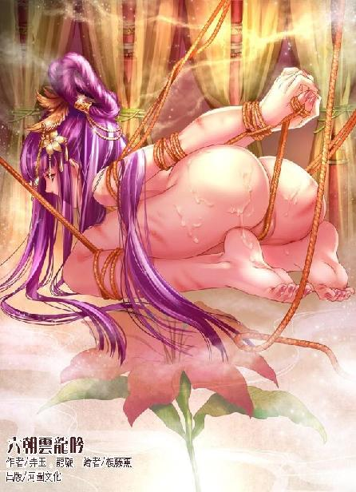

第66集·两宫交兵
汉国篇（18/28）
出版日期：2016-09-08
【本集内容简介】
汉室宫闱一夕惊变，吕氏一脉的大胆令程宗扬震惊，也破坏了程氏商会于汉国的部署。才以为汉国就要为吕冀把持，转头竟杀出一个手持玉玺、虎符的江都王刘建。危机亦是转机，程宗扬决定继续支持赵飞燕与定陶王，在吕氏和刘建之间杀出生路，拿下这笔巨大的长远富贵！
这场宫变杀戮，反而给程宗扬带来了好处，无尽死气刺激生死根自行运转，但充沛的真气却无法使修为突破六级通幽壁障。卡在坐照境巅峰，程宗扬何时才能等来突破的契机？
※ ※ ※ ※ ※

封面人物：友通期
程宗扬觉得自己一生的震惊都在这一晚用完了。至高无上的天子在自己眼皮底下暴毙，备受荣宠的妃嫔像娼妓一样被人淫辱，鲜血和杀戮在这座富丽堂皇的宫殿中肆意流淌。
吕冀的猖狂和嚣张远远超出自己的想象，但程宗扬无论如何也想不到，吕冀会肆无忌惮到如此地步。
楼梯下方，天子的舅父、大司马吕冀像骑着一匹美丽的小母马一样，骑在浑身赤裸、肤染鲜血的赵昭仪臀上，一边扯住她颈中的绳索，死死勒紧，神情兴奋而凶狞。友通期六识被禁，此时扬着面孔，空洞的双眼圆睁着，嘴巴越张越大，连舌头都伸了出来。
绳索深深勒进少女粉嫩的玉颈，一点一滴地绞杀着她的生命。不多时，友通期便呼吸断绝，气息全无，她粉白的玉颈软软歪在一边，美丽的脸庞再没有一丝血色。吕冀满脸兴奋，在友通期身躯抽搐的雪臀内狠狠挺动几下，然后放肆地喷射起来。
赵合德双手捂住嘴巴，身子瑟瑟发抖，整个人都到了崩溃的边缘。天子的死让她惊骇欲绝，友通期的死却让她感同身受——假若当初她不是代替自己入宫，此时受尽淫辱，最终在无意识中凄惨死去的就是自己了。
人死如灯灭，无论生前如何地位尊崇、权倾天下，又或者如何的千娇百媚、芳华绝代，死后都只是一具冰凉的尸体。生前的一切都再没有任何意义，只剩下黑暗、冰冷、漫长而没有尽头的死亡……
赵合德怔怔望着那个与自己一般年纪、一般青春貌美的少女，望着她空洞的眼睛和伸长的舌头……突然间，赵合德感觉到一阵无比的恐惧。
那是一种面对死亡的恐惧，那种恐惧的感觉如此真切，死亡就像一条黑色的绳索，缓慢却毫不留情地在她颈中绞紧，冰冷得令人窒息。
忽然脸侧微微一暖，有人把嘴巴凑到自己耳边，接着一个低微却清晰的声音说道：“别害怕——她没有死。”
赵合德扭头看着他。程宗扬确定地点点头，“真的，相信我。”
赵合德心下一松，一股热泪几乎流淌出来。
程宗扬并不是虚言安慰，最初的震惊过后，他立刻意识到有些不对。对于死亡的感知，没有人能比他更清晰，虽然友通期看上去已经香消玉殒、生机全无，但程宗扬并没有感受死亡的气息。
生死根不会撒谎，没有感受到她的死气，说明友通期仍然活着，她的死亡只是被人设计好的假象。只不过那些人设计得十分巧妙，在窒息昏迷和六识禁绝丹的禁闭下，现在的她看起来就像一具尸体。
两名内侍解下昭仪身上的绳索，趁着她身体未冷，在她腕上、膝上、肩上抹了些药物，轻轻揉拍几下，褪去绳索绑捆的痕迹，然后用一条白纱盖在她身上，拖了出去。
另有内侍捧来衣冠，轻手轻脚地帮吕冀穿戴起来。
吕冀穿戴整齐，然后望了眼楼梯。
旁边的内侍道：“为了防止宫里的人逃跑，上头的暗门从外面顶住了，这会儿刚打开。”
吕冀点了点头，然后拾级而上。
程宗扬搂住赵合德，紧紧贴在档板另一侧，身体像要粘在上面一样，一动不动，一边死死屏住呼吸。
幸好吕冀只是路过，并没有留意隔板后面还藏得有人。他从暗门出去，在内侍的掩护下绕到宫门处，然后停下脚步，用力揉了揉脸，装出一脸惊色，像是刚刚赶到一样，小跑着疾趋而入。
“圣上！”
吕冀一进来便放声大哭。群臣也只能陪着干嚎。
吕冀扑到榻边，嚎啕道：“圣上春秋正盛……怎么就弃我等而去啊！臣受命辅政，竟然护不得圣上周全，真是罪该万死啊……”
张恽哭道：“大司马，你节哀啊，咱们汉国还要靠大司马你来支撑啊……”
霍子孟陪着洒了几滴眼泪，戚然道：“大司马来了，我们也有主心骨了。下面该怎么做，还请大司马拿个主意。”
吕冀拭了拭泪，“圣上的死因查清了吗？”
“仵作还没来，眼下看来……当是脱症。”
“为何要叫仵作！”吕冀赫然变色，“眼下的场面，岂能让外面人看到？”
霍子孟“嘿”了一声，不再开口。
吕氏一系的几名大臣附和道：“大司马所言正是。宫闱之事关乎天子脸面，若是被外人看到，私下传扬出去，只怕有辱圣上令名……”
“是先帝。”吕冀冷着脸纠正道。
他环顾了一眼左右，然后道：“眼下最要紧的，一是拟定谥号。韦丞相，你文学优长，就由你来主持。务必要给先帝拟定一个美谥。”
这是把自己排除出核心圈子之外了。韦玄成心里怎么想的没人知道，面上却毫无怨色，恭恭敬敬地应道：“是。”
“第二件事，是善后。”吕冀接着道：“先帝驾崩，有骇物议，这死相也不甚雅观，传出去丢皇家的人。依我看，就说因病吧。”
霍子孟、张汤等人不发一语，其他几名大臣纷纷称是。
“至于守灵。白天的话，京中两千石以上官员都来。夜里嘛，我年轻，就辛苦一些，头三天由我值守。往后是霍大将军和张公。”
吕冀出言轻佻，视群臣如无物，就他布置的这些，说好听些，叫随心所欲，说难听点，完全是狗屁不通。汉国风俗极重葬礼，天子之丧更是重中之重，有一整套完备的礼仪。吕冀这番信口开河，根本不合礼制，说得更严重些，是以庶人之礼安葬天子。
此言一出，殿内整个冷了下来，霍子孟木着脸，张汤看着脚下，都不开口。连那些与吕家关系密切的大臣也都闭上嘴，没有附和。
金蜜镝一直伏地尽哀，此时挣起身，奋然道：“大司马此语，不合于礼。”
金蜜镝身为车骑将军，位比三公，是朝中有数的重臣，而且身材高大，气势凛然，吕冀本来就对他畏惧三分，此时金蜜镝突然挺身而斥，原本得意万分的吕冀心头一慌，气焰顿熄。
眼看吕冀露出慌乱之色，旁边一名穿着绣衣的官员挺身而出，“金车骑此言差矣。天子晏驾，大司马乃百官之长，自当主持葬礼，何来与礼不合？”
金蜜镝只是指斥吕冀出言无状，安排的仪式不合礼数，这官员一张口却把金蜜镝的指斥歪曲到该不该由大司马主持葬礼上，明显是在搅浑水，好替吕冀开脱。
金蜜镝是朝中老臣，知道此时若要解释，正中此人伎俩，无事也被搅出是非来。他挑起浓眉，“你是何人？”
那官员对金蜜镝的怒火视而不见，不卑不亢地揖手一礼，朗声道：“下官绣衣使者，江充。”
“你可知道天子之丧的仪式礼节？”
江充圆滑地答道：“既然由大司马主持，自当由大司马定夺。”
霍子孟终于开口，“大司马也要依礼而行，依你的说法，大司马就可以不讲礼数了吗？你这是佞臣啊，小伙子。”
霍子孟开口，份量又是不同，江充被他当面骂成佞臣，别说还嘴，连回看一眼都觉得底气不足。
吕冀干笑道：“大家商量，大家商量。”
就在这时，外面一片喧哗，有人喝道：“让开！皇后的车驾你们也敢挡！”
吕冀脸上的横肉抖了一下，他扫了张恽一眼，然后疾步而出。
赵飞燕乘着凤辇，在宫女和内侍的簇拥下穿过廊桥。她怀中紧紧抱着年幼的定陶王，苍白的脸上满是泪痕，一双美目又红又肿。
吕冀不情愿地双膝跪地，“臣参见皇后。”
赵飞燕顾不上理会，匆忙入了寝宫。
吕冀脸色阴沉下来。
天子的尸身已经覆上白布，满榻的血迹却怎么也盖不住。赵飞燕一眼看去，如同当头挨了一棒，身形摇摇欲坠。
后面一名宫女上前一步扶住她，顺势接过定陶王，交给盛姬看护。
躲在藻井上的程宗扬松了口气，那名宫女正是罂粟女。她多半是在自己“走后”，前往长秋宫传话，正好逃过一劫。
吕冀还在殿门处，沉着脸慢慢磨着步子。霍子孟只好道：“请皇后节哀。”
赵飞燕颤声道：“圣上可是……”
“属纩是臣亲手所验，”张汤哀声道：“圣上已然龙驭宾天。”
属纩是把丝棉的轻絮放在死者口鼻处，检验是否已经身故。眼下大臣已经验过，又看到榻上的血泊，赵飞燕心底那点细微的侥幸顿时破灭。她双膝一软，跪倒在榻旁，泪水夺眶而出。
吕冀狠狠盯了她几眼，眼底露出几分贪婪和一丝冷笑。
张恽假惺惺道：“娘娘节哀，此间由大司马主持，娘娘莫哭坏了身子。”
赵飞燕泪如雨下，浑身的力气都仿佛被抽光了一样。
忽然一个稚嫩的声音问道：“为何不呼魂？”
以霍子孟的老辣，此时也禁不住面露诧异。这话若是旁人说的倒也罢了，可说话的竟然是定陶王，一个年仅三岁的稚子。
“父王薨逝时，我记得臣子们在殿上呼魂呼了好久。”定陶王扬起脸，“姆娘，是吗？”
盛姬也是满心忐忑，勉强笑道：“欣儿真聪明，记得真清楚。”
霍子孟反应过来，连忙道：“回殿下，臣等正与大司马商议此事。”
吕冀盯了定陶王一眼，板着脸，语含讥诮地说道：“臣正要命人呼魂。有劳定陶王提醒。”
赵飞燕忍着泪，哽咽道：“圣上身体一向康健，不知为何会突然驾崩？”
吕冀拉长语调，“这个嘛——”
话音未落，殿内突然有宫女尖叫道：“昭仪！昭仪自尽了！”
殿后又是一片大乱，赵飞燕强忍着心下的惊惧，在罂奴的搀扶下走过去。殿侧的珠帘已经被人掀开，一条白绫从梁上垂下，赵昭仪穿着宫装，赤着脚悬在半空，地毯上倒着一张几案。
一名宫女泣声说道：“奴婢一直在帘外守着，昭仪也没有说话，刚才听到声响，才看到昭仪已经……已经……”
罂粟女匆忙道：“既然是刚才，赶快救下来，说不定还有救。”
张恽一摆手，几名内侍上前抱住赵昭仪的腰腿，把她抬了下来。
赵昭仪身子尚且柔软，鼻间却呼吸全无，宫女们匆忙扯来丝絮放在她鼻下，已经没有丝毫动静。
赵飞燕不知道殿内发生的事，但赵昭仪突然自尽，她似乎已经明白了什么。她看着赵昭仪的尸身，那张曾经娇艳的面孔，此时仿佛白纸一样没有丝毫血色，身上的宫装虽然华丽，却一片零乱，似乎是匆忙披上，来不及整理，衣下还露出一角染着血迹的白纱……
“赵昭仪好大的胆子，竟然畏罪自尽！”
一个森然可怖的声音在耳边响起，如同惊雷，将赵飞燕震得手脚冰凉。
自己倚为靠山的丈夫暴毙而亡，而罪魁祸首则是自己唯一的“妹妹”——转眼间，自己失去了生命中最亲近的两个人，其中一个还将背负无法承受的罪名。
张恽顿足道：“死有余辜！”
吕冀盯着赵飞燕，脸上的肌肉跳动了几下，然后一摆手，“拉去偏殿！验尸之后再做处置！”
赵飞燕想要开口，却被罂奴紧紧扯住衣袖，只能茫然目视着“妹妹”的尸体被内侍抬走，消失在殿外的夜色下。那一瞬间，绝望中的赵飞燕心里涌出的居然是一丝庆幸，庆幸那个人带走了自己真正的亲妹妹，使她永远不必目睹，更不必经历这一幕。
“呼魂的事嘛……”吕冀的目光在人群间逡巡。
金蜜镝往前迈了一步。
吕冀再不情愿，也只好说道：“就由金车骑和……”
“臣愿为天子呼魂。”江充拱手说道。
吕冀应许道：“和江使者一同为天子呼魂。”
内侍找来天子的衣物，金蜜镝手持外衣，江充紧跟其后，一同踏上木梯。程宗扬早就想走，却没想到吕冀离开之后，那道暗门又被人顶住，想走也走不了。此时只能再一次缩起身子，竭力藏好。
步履声从楼梯上传来，一名内侍领着金蜜镝和江充走到殿顶的小门处，往外一推，没能推开，连忙说道：“这道门久未使用，昭仪让人封住了，小的这就叫人打开。”
金蜜镝转身就走，一边吩咐道：“拿梯子去！”
内侍假模作样地叫了几声，让人在殿外架起长梯。内侍们又是一阵忙乱，不多时搬来长梯，高高搭上殿顶。两名臣子攀梯而登，一直爬到殿顶。
金蜜镝拿着天子的衣物，手持衣领，江充拿着衣腰，张开衣物，两人面向北方，一边在殿顶奔走，一边为天子呼魂。
金蜜镝拉长声音高声呼喊道：“天子复矣……”
江充道：“陛下归来……”
“天子复矣……”
“圣上归来吧……”
两人声音一高一低，金蜜镝雄浑的声音中充满悲怆和哀痛，在夜色间远远传开。宫禁中璀璨的灯火迅速熄灭，陷入黑暗之中，紧接着悲声四起。
金蜜镝与江充在殿上呼魂，下面也没有闲着。到底是众怒难犯，吕冀被金蜜镝一喝，气焰顿熄，此时与众臣一道换了麻冠麻衣，按照天子的礼仪整治丧事。
内侍们将御榻搬到寝宫南侧的窗下，撤去染血的被褥，整理天子的遗体。他们小心撬开天子的牙关，将珍珠与碎玉混合，放入天子口中，作为饭含，使亡魂不会饥馁，再拿玉片盖住双眼，用玉瑱塞住七窍。刘骜四肢已然僵硬，众人费尽力气，才将他手脚扳直，固定住，用锦衾盖上。接着在御榻东侧设上酒食，供天子的鬼魂食用。
几名内侍在寝宫西侧设灶，将香草投入鬯酒烧热，为天子沐浴洁身、栉发，修饰遗容。
等金蜜镝与江充拿着衣物下来，霍子孟与张汤接过衣物，给天子穿上。随后天子修饰过的遗体被移到寝宫中央，内侍在周围张设帷帐，众人退到在帷帐外跪拜，将生者与死者隔开，以示生死殊途。
自皇后赵飞燕以下，所有的妃嫔都已经赶来。对于这些深宫中的女子而言，天子是她们唯一的倚仗，听闻天子驾崩，就如同天塌下来一般，哭作一团。
天子身边的近侍都被抓了起来，张恽俨然以内宫总管自居，吩咐她们除去饰品，解下华丽的宫装，换上素服，外面穿上未缝边的粗制麻衣，以粗麻为带，菅草为鞋。然后解开发髻，用一条寸许宽的麻布条从额前交叉绕过，将长发束为丧髻，拿一根细竹作笄，挽住长发，再用粗布包住头发，洗去脂粉，为天子持丧。
殿前设幕三重，中间摆放着天子的灵牌，作为灵堂。周围点燃灯烛，用来指引亡灵接受供祭。西阶用长竹挑起一条长达丈二的白帛，上书：劉驁之柩。殿外设庐，供守灵的妃嫔休息，庐中只有苫草，以示丧痛。
灵堂陈设完毕，诸妃、群臣、宫中的内侍、宫女按照亲疏远近、身份高低，依次设位，痛哭祭奠。
吕冀放下架子，与霍子孟等人商议后，以大司马的名义下令加强宫禁以及京城的戒备，同时整个汉国以内罢市七日，以防奸人作乱。
但在告丧时，众人又起争议。天子无后，霍子孟建议以皇后为丧主，吕冀坚持以为不可，既然没有嗣子，丧主一栏只能空缺，要不然眼下就为天子立嗣，作为丧主。
最后霍子孟妥协，以丧主空缺的方式，向诸侯、群臣报丧。
四更时分，正是夜色最深的时候，群臣陆续接到告丧，急忙赶赴宫中，其中就包括司隶校尉董宣。作为仅存的天子近臣，惊闻天子暴毙，董宣惊骇不已，他立即召集手下隶徒，吩咐几句，然后疾赴宫中。
皇后跪在帐前，泪光满面，神志恍惚。赶来的众臣依次上前叩拜，轮到董宣时，他一边俯身叩首，一边低声道：“皇后殿下，圣上……”
身边忽然多了一双靴子，接着张恽的声音响起：“董司隶，你逾位了。”
董宣向天子的遗体重重叩拜一记，向后退去。
张恽一言斥退董卧虎，心下不免得意，他扫了皇后等人一眼，然后昂首挺胸地吩咐道：“举哀——”
寝宫内外，顿时哭声大作。
赵飞燕哭泣多时，等她泪眼模糊地转过脸，只见定陶王也换了一件小小的麻衣，跪在灵前，这会儿靠在盛姬身上，已经睡熟了。
罂粟女跪在赵飞燕身后，被张恽目光一扫，半边身子都仿佛浸在冰水中，其寒彻骨。她本来是去长秋宫报信，不料转眼间便物是人非。整个昭阳宫的内侍、宫女都被清洗过一遍，只剩下寥寥数人，连江女傅都不见踪影。
罂粟女心知不妙，若是依着自己的心思，这会儿就要设法逃生，以免为天子陪葬。可主子吩咐过，让自己留在宫里，一是守护友通期，二是守护皇后。赵昭仪已经自尽，皇后尚在，自己再害怕，也只能硬着头皮待下去。
谁知刚才就在董宣跪下的同时，一粒小小的蜡丸弹到自己手边，要不是自己反应够快，险些就被那个太后宫里的内侍察觉。饶是如此，罂奴也被惊出一身冷汗。她不敢乱动，只借着哀哭掩饰自己的异状。
赶来的朝臣越来越多，吕冀跪得不耐烦，一边诈哭，一边将袖中的胡椒粉向喉中一弹，连连咳嗽起来。
两名内侍哭着过来，“大司马伤痛过度，恐是受了风寒，还请休息片刻。”
殿外的庐舍是天子亲眷所用，吕冀权位再重也没得住。两名内侍扶着他进了偏殿，来到一处刚刚设好的帷帐内。
许杨已在帐内等候多时，他略一躬身，随即摊开一册卷轴。卷轴极长，上面是一连串的人名，最前面一个名字并无字迹，只有两个圈，下面用朱笔打了一个血淋淋的叉。名讳虽然隐去，但两人都知道这个首先要除掉之人到底是谁。
再往后，具瑗的名字下面同样用红笔打了个叉，显示已经伏诛。其余几位中常侍：唐衡、左悺、徐璜名下都用红笔画了个圈，显示已被捕拿，唯有单超名下一片空白。
卷轴往后，打红叉的越来越多，显然那些身份低微而又知情的近侍，已经被大量诛除。
吕冀在昭阳殿大肆淫虐的时候，许杨等人四处奔忙，急于补救，此时他已经没有力气再去腹诽。若不是吕冀提前半个时辰到场，哪里需要冒着风险处置掉这些人？按照巨君主公的布置，由他们出来作证，反而更能坐实赵昭仪的罪名。
吕冀看过之后，一把抄起朱笔，在那个用圆圈隐讳的名字旁边又加了一个人名：金蜜镝。
许杨忍不住道：“大司马，金车骑是朝中重臣，怎好轻易诛除？”
“只要他死，我不管他是被处死，还是被毒死，或者怎么意外死掉。”吕冀恨恨道：“此人不除，吾不得安！”
许杨无言以对，只能收起名册，然后捺住焦急，逐一禀报诸般事宜。
忽然殿内传来一阵嘻笑，“这就是赵昭仪？哎哟哟，瞧着跟活的一样……干嘛呢？还不让开！这贱人害死天子，畏罪自尽，让我说，暴尸三日也不为过！”
几名簪缨戴冠的高官涌进殿中，却是吕让、吕淑、吕忠等一班吕家子弟。他们大模大样地聚在殿中，围着赵昭仪的尸首指点嘻笑。
“这就是书里说的那个红颜祸水？确实有几分姿色哈。”
“柳眉秀口，一点绛唇……好一个尤物！”
“衣服都没穿好？里面不会是光着的吧？”
“都让开！都让开！小心这贱人诈死！”吕让推开众人，淫笑道：“待我来验验尸……”
几人鼓噪着扯开赵昭仪的衣物，里面只有一条沾血的薄纱，那具曼妙的玉体在灯光下一览无余。
“哎哟，天子可够狠的啊！你瞧这奶子，被抓得都是血痕，奶头都肿了。”
“这是咬的吧？这粉嫩嫩的奶子都下得去口，真是禽兽……”
“怪不得死在她身上呢，玩得可真够疯的……”
“这细皮白肉的，难怪叫温柔乡呢。”
“我瞧着这小贱人怎么跟让人轮过似的？都被干成这样了……”
吕让大模大样地伸出手，对着赵昭仪腹下抠了进去，“嗨哟！赶上了哎！刚死没多久这是？里面还软着呢。”
“把腿扒开！”
吕家子弟嘻笑着把赵昭仪双腿拉开，一大股精液顿时从她被撑开的蜜穴中涌出。
“啧啧，这小嫩屄真够水灵的，里面被灌满了吧？”吕让一边摸弄着女尸的下体，一边大惊小怪地叫道。
吕冀阴沉着脸出来，喝道：“放肆！”
几个小辈连忙收起笑声，吕让却毫不在乎，“这有什么？当初那个冯贵人，还不是被咱们……”
眼看吕冀瞪起眼睛，吕让终于把剩下的半截话吞了回去，嘴上兀自不服气地说道：“何况这还是个死的？”
吕冀重重跺了一脚，“都出去！”
“行了行了，坏不了事儿。”吕让悻悻然丢下手，招呼道：“走了！走了！给天子披麻戴孝去！”
吕冀望着几人的背影，恨声道：“成事不足！败事有余！”
许杨心下着急，“大司马，不是说好了，让诸位带兵的校尉轮流祭奠的吗？怎么一股脑都来了？”
吕冀气道：“我怎么知道！”
“此举殊为不妥！”许杨急道：“天子甫丧，人心难定，只靠卫尉一军，怎能守住南北二宫？还请大司马下令，让他们立刻赶赴北军大营！”
“慌什么！”吕冀呵斥一声，皱眉道：“祭奠过后，让他们过去就是。”
许杨自诩多智，此时心里也像打鼓一样，他硬着头皮道：“敢问大司马，继嗣者可安排妥当？”
吕冀横了他一眼，“这是你该问的吗？”
许杨直想把手中的卷轴摔到吕冀脸上，自己把身家性命都押在吕家身上，居然连问都不能问一声？他忽然怀疑巨君主公是不是做错了什么，如此庸人，岂能托付大事？
他退开一步，躬身道：“属下告辞。”说罢匆忙离开。
※ ※ ※ ※ ※
天色微明，天子暴毙的消息已经像野火一样传遍整个洛都，留在京中的二千石以上官员纷纷赶往宫中。鸿胪寺更是一片纷忙，不仅要将天子驾崩的消息报送各位诸侯王、列侯，还要派出特使，分赴秦、唐、晋、宋诸国报丧。
在京的诸侯并不多，眼下除了定陶王，唯有江都王太子刘建仍留在京中。报丧的治礼郎赶到江都王邸，却扑了个空，王邸的门子告诉他，刘建早在两个时辰之前就已经入宫。治礼郎心下纳闷，但也不敢多问，连忙往下一家王邸跑去。
敖润从鸿胪寺出来，驱车直奔通商里。他一路毫不停歇，平常两刻钟的路，只用了一刻多钟便即赶到。
拐进巷子时，敖润丝毫没有减速，只双臂一紧，口中“吁吁”地叫了两声。驾辕的双马铁蹄翻飞，硬生生兜转过来，冲进巷内。敖润冲的速度太猛，以至于车厢倾斜，一侧的车轮悬空，另一侧包铁的车轮在青石板上溅出一串火星。
敖润使了个千斤坠，身体一沉，将倾斜的车厢压了下来。到了门前，他双臂一收，马匹人立而起，在车厢的惯性下又滑了半截，才勉强停下。
敖润从车上跃下，冲进院内，秦桧、班超等人早己在外院等候多时，连忙迎了上来。
“情况如何？”
“确定了！”敖润喘着气道：“天子昨晚驾崩！眼下由大司马主持丧事。”
班超道：“主公呢？”
敖润脸上抽搐了一下，咬着牙道：“昭阳宫被封了，在里面没出来。”
“糟糕！”
秦桧道：“宫里的情形呢？”
“一点动静都没有。”敖润道：“从昨晚开始，宫里就许进不许出，什么消息都传不出来。除了几名禁卫有点眼熟，其他全是生脸。”
班超道：“天子的死因呢？”
“鸿胪寺透出的消息，只说因病，其他一概不知。”
班超扼腕道：“吕家得手了！”
秦桧飞快地捻着手指，眼睛四处乱转，片刻后说道：“眼下最要紧的，是先跟宫里联络上，确定主公无恙——长伯，你去请斯四爷和卢五爷。”
吴三桂应了一声，去找期明信和卢景。
“老匡，你去通知一下云家，让他们留守的人手先去上清观暂避。”秦桧说着看了眼王蕙，“你去见一下大小姐，一是请卓教御过来，二是知会洛帮的何大当家，该准备的都准备好。”
王蕙知道他是在安排退路，微微点了点头。
秦桧转头道：“程郑那边你去安排，钱财是小事，先把人安顿下来。”
班超道：“赵先生和陶五爷那边呢？”
“给他们传个信，都当心些。”秦桧望了望天，“天色已变，只怕后面还有大乱……其他事情，只能等家主回来再作决断了。”
※ ※ ※ ※ ※
昭阳宫内到处乱纷纷的，不断有大臣赶来。吕冀脸色越来越难看，他原想着天子驾崩，一切难题都迎刃而解，却没想到会被一堆琐事弄得焦头烂额。当初谋划时，只顾图谋大事，谁也没有在丧事上留心，结果所有的事都堆到他这位主持丧礼的大司马头上。
眼下要给奔丧的臣子们安排位次，收取祭礼，安排麻衣麻冠，还要劳心费神地解惑释疑，安抚人心。这边还没安排停当，那边又发现丧礼所用的物品不足，说来也不奇怪，天子春秋鼎盛，谁也没想过要准备丧事。
事情一桩一桩报上来，吵得吕冀心烦意乱，好不容易安排下去，最后甚至连安排出恭的事都禀报到他面前。吕冀忍无可忍，正要喝骂，却发现自张恽以下，几十名内侍都忙得四处奔走，就没一个闲人。
这事还是得霍子孟那种老家伙来办啊……
吕冀心里嘀咕了一句，终究还是没能拉下脸去找霍子孟帮忙。
“这等小事也来咶噪！”吕冀道：“在殿后设几处帷帐便是。”
“殿后种的花草……”
“铲了！”
“是。”
那内侍闻声退下。吕冀一抬头，却发现一群人正围着丞相韦玄成说些什么。
吕冀皱了皱眉头，唤过旁边的内侍，“去看看怎么回事。”
不多时，那内侍小跑着回来，“是唐国和秦国的使臣……”
六朝诸国之间互相都设有使臣，彼此待之以国宾之礼。天子驾崩，这些使臣接到消息赶来致祭乃是常理，不过内侍接下来的话让吕冀心头一震。
“……他们在问立嗣之事。”
吕冀眼角跳了几下，随即大步走了过去。
一名使臣道：“天子龙驭宾天，人心惶然，乱过这几日也就是了。”
另一名使臣道：“阁下多虑了。新君一旦继位，人心自然安定。”
那使臣讥讽地看了眼宫中的乱象，然后皱起眉头，摆出一脸忧色，“可惜天子无后，不知谁人继嗣大统？”
“立嗣之事，自有太后定夺。”吕冀沉着脸道：“就不劳各位费心了。”
那名使臣拱手笑道：“宋国使臣洪迈，见过大司马。国不可一日无君，如今天子大行，还请贵国早做定夺。”
吕冀哼了一声，正要开口，却忽然发现，只几句工夫，周围便围了数十人，每个人都竖起耳朵，听着双方交谈，一个字都不肯漏过。
吕冀这一沉默，情形更糟，旁边的唐国使臣紧接着便说道：“立嗣乃国之根本，当召集群臣议论而定，岂能由太后一言而决？”
韦玄成不能不开口，只好道：“此乃天子家事，诸位静待便是。”
另一名使臣笑道：“贵国之事当然与我等无关，我等只是问问。只不过韦丞相说此乃天子家事，小臣不敢苟同。天子无私事，何况此等大事呢？”
此言一出，周围顿时响起一片附和之声。
这帮幸灾乐祸、唯恐天下不乱的混账！吕冀心下大骂，重重一拂衣袖，“请三公九卿议事！”
吕冀本来准备稳住局面再商议立嗣之事，但现在被那帮使臣一挑拨，群臣人心浮动，立嗣之事已经是箭在弦上，不得不发。
九卿中大司农宁成、少府五鹿充宗被逐，如今空缺，其余丞相韦玄成、御史大夫张汤、大将军霍子孟、大鸿胪车千秋、宗正刘德、卫尉吕淑等人都在宫中，不多时便齐聚殿内。
吕冀懒得再兜圈子，径自说道：“天子驾崩，如今立嗣之事迫在眉睫。请各位来，便是议论一下，先拿个章程出来。这位绣衣使者江充，行事稳妥，一向得太后信重。咱们议定之后，由他禀之太后。”
霍子孟、金蜜镝、张汤等人都不作声。
殿内沉默片刻，大鸿胪车千秋首先开口，“不知如今可有人选？”
江充道：“千乘侯刘缵聪颖过人，按辈分为先帝之侄，继先帝之嗣可谓顺理成章。”
金蜜镝刚要开口，已经有人说道：“千乘侯年仅八岁，入继大宝似乎有所不妥。何况……支系也远了些。”
众人都看了过去，却是九卿之一的宗正刘德。刘德是汉国宗亲，又主管宗室诸事，对刘氏亲族了如指掌。
车千秋道：“千乘侯年纪虽幼，但天生聪慧，可为备选。”
众人议论几句，便定下来作为备选。
江充接着说道：“近支宗室里面，河间王之孙刘志，年十五，聪明贤能，有帝王之资。”
众人心下雪亮，江充先提的刘缵年仅八岁，一旦继位，太后至少垂帘听政十年。江充接着提出的刘志年已十五，看似退了一步，但刘志正在议论亲事，迎娶的正是吕氏之女。他若继位，吕氏后族又多了一个皇后。
张汤开口道：“清河王刘蒜以明德著称，为人沉稳有大度，可当国。”
吕冀拧起眉头。汉国诸侯王中，以清河王德望最著、名声最好，他早知道肯定会有人提出清河王，却没想到开口的会是张汤。
金蜜镝道：“何不立定陶王？圣上将定陶王接入宫中，立嗣之意昭然。我等当秉天子遗志，立定陶王为嗣。”
吕冀心下更烦，若立定陶王，垂帘的就不是吕氏，而是赵氏了。
江充搪塞道：“此事当禀之太后。”
江充话未说完，外面便传来一阵吵嚷声，“让开！”
两名守在门前的内侍被人推得跌进殿内，接着一群人大步入内。吕冀一眼看去，心里就腾起一团火。这回来的都是留在京中的刘氏宗室，为首的是江都王太子刘建。往日为求立嗣，刘建没少在阿姐面前钻营卖好，平常见了自己也是客气万分，没想到天子刚刚驾崩，他就按捺不住地跳了出来。
莫非他以为天子驾崩，他就可以登基了？简直是作梦！
吕冀沉着脸道：“此间正在议事，汝身为诸侯，何故擅闯？”
刘建昂然道：“此乃我刘氏家事，岂能由尔等密室私议？”
吕冀大怒道：“朝中重臣俱在，何来密室私议？”
“敢问大司马，你们拟定继嗣者是谁？可敢公之于众？”
吕冀拂袖道：“我犯不着和你说！”
江充一看话风不对，赶紧说道：“这也没有什么不能说的。如今正在商议的三位，千乘侯刘缵、河间王之孙刘志、清河王刘蒜。”
霍子孟道：“还有定陶王刘欣。”
“连那个黄口小儿也能入选，”刘建高声道：“我刘建身为江都王太子，难道没有资格继承大宝吗？”
江充提醒道：“建太子与天子平辈，岂能继嗣？”
“兄终弟及，有何不妥？”刘建冷笑道：“何况天子驾崩之前曾有遗命，嘱我继承帝业。”
此言一出，殿中顿时一片哗然，吕冀更是赫然变色，“一派胡言！哪里来的遗命！”
刘建反诘道：“大司马如此笃定，莫非大司马当时在场？”
吕冀不禁语塞。
霍子孟喝道：“建太子！切莫妄言！”
刘建神情笃定地说道：“我既然敢在诸位面前说出来，自然是有证据。”
张汤道：“什么证据？”
刘建目光从群臣面上一一扫过，然后道：“昨晚天子驾崩前，有人亲耳听到，天子将帝位传继于我——赵昭仪可以作证！”
张汤皱眉道：“赵昭仪已然自尽。”
刘建略微一怔，随即目光炯炯地盯着吕冀，“只怕不是自尽，而是被人灭口了吧！”
吕冀指着刘建，“你——”
忽然间吕冀心头一寒，只见刘建身后鬼魅般闪出一个身影，只一步便跨到他身侧，然后一把攀住他的脖颈，抬腕从袖中挥出一柄带血的短刀，架在他颈中的肥肉上。
那人动作犹如电光石火一般，几乎是身体一动，就将吕冀制住。
满殿文武都呆住了。群臣寻常入宫，都不允许随身携带兵刃，而汉宫多年以来也从未发生过有人手持凶器挟持大臣的场面。这石破天惊的一击，别说吕冀没想到，连活了大半辈子的霍子孟也算是开眼了。
突然间生死操之人手，吕冀来不及恐惧，就被愤怒冲昏了理智。
“中行说！”吕冀咆哮道：“你好大的胆子！”
“呸！”穿着一身黑色仆服的中行说神情狰狞，他一口血沫啐到吕冀脸上，尖声道：“说！圣上是不是你害死的！”
“你血口喷人！”
“逆贼！”中行说声音又尖又细，像铁锯磨擦一样刺耳，“若不是你，为何昨晚宫中内外都是你们的人！”
眼前的变故让众臣都措手不及，隔了片刻，江充才叫道：“中行说！快放开大司马！”
张恽叫道：“中行说！是你与具瑗等人勾结，害死了先帝！”
“张恽！”中行说嘶吼道：“你先告诉我，你们北宫的内侍，怎么会跑到我们南宫来了？说！”
张恽张口结舌。
中行说性情偏狭，此时遭逢大乱，更是形如疯颠，见张恽迟疑，他抬手挥起短刀，狠狠扎在吕冀肩上，冲张恽叫道：“快说！”
吕冀惨叫一声，随即又被中行说勒住脖颈，叫不出声来，只是鲜血从伤口涌出，顿时染红了麻衣。
这一幕不仅让群臣看傻了眼，连刘建也瞠目结舌。他乍然听闻天子死讯，连忙赶往宫中，没想到车驾入宫时，却遇到一个浑身是血的内侍。刘建认出那是天子身边的近侍中行说，赶紧把他接入车中。结果中行说告诉他一个惊人的消息：天子临终前曾有遗命，由他来继承帝位。可朝中有奸臣，不仅对外隐瞒了消息，还大肆捉拿天子身边的知情人。自己浴血奋战，誓死不降，就是要请刘建入宫诛除逆贼，秉承先帝遗愿，登基为帝。
刘建心怀鬼胎，听了这话，当即被惊喜之情冲昏了头脑，哪里顾得上理会中行说是不是信口开河？
遗命之说当然是假的。自从宫中惊变，中行说便豁出去了，他知道自己落到吕氏手中，必然是个死字，索性拼个鱼死网破，就算死也要拉上几个垫背的，即便搅得天下大乱也在所不惜。编几句话骗骗刘建算什么？只要能坏了吕家的事，把汉国的诸侯全填进去，他眼睛也不眨一下。
双方一拍即合，于是就有了闯宫这场戏码。可惜刘建跟中行说不熟，不知道中行说一旦发起疯来连天子都不尿，天王老子说话都不好使，只顾按自己的心意干。原来两人商量得好好的，由中行说作证，在群臣面前宣布天子遗命，争取群臣拥戴，运气好的话，说不定能当场登基，控制大局——这种好事想想就能笑醒。
谁知中行说一上来就奔着吕冀去了，什么遗命的事，嘴上说说罢了。他这边视死如归、一往无前，算是把刘建彻底坑了。刘建好比是借个梯子刚爬了一半，突然被人把梯子抽走了，就那么晾在半空，进退不得。
正迟疑间，谁也没有留意到九卿之一的卫尉吕淑悄悄溜出门去，转身就带了一班甲士堵住大殿，高声道：“休得放肆！快放开大司马！”
中行说也没闲着，一边逼问，一边接连在吕冀身上捅了几刀。那模样不像是要追问真相，倒像是拿吕冀过瘾来的，就图个痛快。吕冀哪里遇到过这个？连惊带吓再加上吃痛，以往的跋扈傲慢早就不翼而飞，就如同一头待宰的肥猪，全无反抗之力，中行说捅一刀，他就惨叫一声，好在中行说只拣肉多的地方捅，暂时没有伤及要害。
刘建正在坐蜡，忽然肩后被人一撞，手中多了个东西，随即耳边一个声音传来。
刘建猛地清醒过来，脸上露出狂喜的表情，等那人说完，立刻将手中的东西高高举起，大呼道：“天子遗诏在此！”
那封黄绫诏书甫一出现，便立刻镇住全场，连中行说都停住手，往刘建手上看去。
诏书确实是宫中之物，鲜亮的黄绫上面墨迹淋漓，只写了一句话：传位于江都王太子刘建！看字迹十分陌生，非是天子亲笔，也不是众臣熟悉的几位侍诏，但诏书之后的印记鲜明无比，正是汉国至高无上的传国玉玺！
刚涌进殿中的甲士脚步顿时踌躇起来，回头朝吕淑张望。
吕淑张大嘴巴，一时没回过神来，倒是江充叫道：“假的！是假的！”
当然是假的。殿中众臣都是明白人，诏书上面的字迹一看就是刚写上去的，连墨迹都没有干透。可上面的印玺真得不能再真！
刘建这会儿像换了个人一样，思路异常清晰，他高举诏书，叫道：“中行说住手！先跟朕出去！”
混在宗亲中的刘建门客簇拥过来，将主公和劫持了吕冀的中行说护在中间，往宫外冲去。
吕淑大声呵斥，但刘建举着诏书在前，中行说劫持吕冀在后，一众甲士畏手畏脚，几乎没怎么阻挡就被他们闯出大殿。
外面祭奠的臣子更多，刘建一边走一边大声呼道：“诸卿可看清楚了！朕奉诏登基！有诛除奸党者，赏千金！封列侯！”
如果刘建只举着诏书，就算吕淑不开口，江充也早命人把他剁了，可他偏偏还劫持了吕冀。那可是太后亲弟，要有个三长两短，自己立功再大，也不会有什么好下场。
饶是江充心狠手辣，此时也无计可施，吕淑更是骑虎难下，只能一面命甲士将群臣逐开，一面命人齐声叫道：“江都太子刘建劫持大司马，矫诏惑乱人心！天下共诛之！”拼命把刘建的叫嚷声压制下去。
一边力有未逮，一边投鼠忌器，双方就这么僵持着，一直折腾到宫门外，最后还是方才递给刘建诏书的黑衣人在中行说耳边说了几句，中行说才放开浑身是血的吕冀，趁吕淑、江充等人上前救援，一群人闯出重围，径直往城南杀去。
刘氏宗亲、刘建的门客、吕淑掌管的甲士都纷纷涌出，殿内只剩下寥寥数位重臣。眼前的乱象如同闹剧，即便是见惯大风大浪的霍子孟、金蜜镝，这回也是大开眼界。中行说孤注一掷，可谓铤而走险；刘建矫诏自封，可谓胆大包天；吕冀、吕淑等人应对无措，可以说是蠢如鹿豕。
“这是……”霍子孟一脸的不可思议，“玉玺被人拿走了？”
众人知道吕冀无能，但无能到这个地步堪称匪夷所思，居然连传国玉玺都没看住。他们不知道从昨晚开始，宫中就一片大乱，掌管印玺的具瑗首先被杀，吕冀只顾着自己快活，早把此事丢在脑后。反正整个南宫都被吕氏控制，一块玉玺还能飞上天不成？可眼下玉玺偏偏就飞了。不仅飞了，还在一份要命的遗诏上留下印迹。就算诏书是假的，有这枚玺印，便有了五分真。
金蜜镝沉声道：“不仅玉玺，只怕连虎符也不在宫中。”
众人脑中轰然一响，汉国兵权全在虎符，虎符通常一剖为二，左符由军中保管，右符藏于朝廷，持符方可调动兵马。刘建如果拿到玉玺、虎符，完全可以名正言顺地控制兵权。
大鸿胪车千秋首先坐不住了，“此事当立即禀知太后！”
张汤默然不语，中行说方才喊出“天子遇害”，听见的可不止在场这些人。刘建虽然只是江都王太子，在京中的势力与吕氏无法相比，但他若是真的卷走玉玺、虎符，引兵入宫，局面将难以预料。况且以吕冀、吕淑等人的举动，让他从心底不看好吕氏。
霍子孟“哎哟”一声，一手扶住腰背，吃力地说道：“老夫沉疴在身，此时难以支持……只能先告退了，恕罪恕罪。”说着一手搭在金蜜镝臂上，有气无力地说道：“扶我一把。”
金蜜镝却没有动。
霍子孟顿时急了，低声道：“再不走就来不及了！”
一言惊醒梦中人，刘建若是调兵来攻，吕氏肯定不会坐以待毙，到时候宫中就是双方殊死搏杀的战场，留在此地，根本是取死之道。在场的众臣都是心思灵动之辈，当即作了鸟兽散，各寻出路。
顷刻间，殿中就只剩下霍子孟和金蜜镝两人。霍子孟不再兜什么圈子，直接说道：“无论谁胜谁负，你我都不失富贵，何必留此死地？”
金蜜镝沉声道：“天子驾崩，本来就是我等的过失。于今之际，安能弃天子而去？”
“宫中自有太后！”
“圣上已逝，皇后尚在，众臣议论时，可置皇后于何地？”
“你要保定陶王？”
“圣上尸骨未寒，终不能让孤子寡母受人欺凌。”
“你啊！”霍子孟气得转了一圈，最后一摆手，“算了，我不跟你说了。我带的人都给你留下——千万别做傻事！”
金蜜镝微微点头。
霍子孟风风火火出了大殿，外面守灵的臣子已经少了一半，剩下的都眼巴巴盯着殿门，见他出来，立刻拥上前去，跟在他身后亦步亦趋。
霍子孟虽然低调隐退，知趣地给吕冀让路，但他秉政多年，威望素著，如今余威犹在，不少朝臣还是把他当作主心骨。
霍子孟面沉如水，一言不发地步下陛阶。他走了几步，终于回过头来，呵斥道：“跟着我做什么！你们难道没有差事吗！”
众人一听，立刻明白过来，乱纷纷向霍子孟行礼，随即四散。内侍中为首的张恽等人都跑去照看受伤的大司马，剩下的小黄门根本阻挡不住这些大臣，只能眼睁睁看着他们离开。
转眼间，刚才还人头涌动的东阁便冷清下来，只剩下几名内侍面面相觑。
正不知所措，殿门处人影一闪，一个高大的身影迈步出来，沉声道：“期门何在？”
一名内侍赶紧躬下身，“回车骑将军，圣上大行，当时随行的期门武士都被关在别院。”
“把他们叫过来，老夫有话吩咐。”
※ ※ ※ ※ ※
程宗扬低低吁了口气，他早就想逃之夭夭，可随着时间推移，赶到的大臣越来越多，把整个东阁都挤得满满的，自己想走也走不了。眼下倒是个好机会，一众大臣走得一干二净，卫尉掌管的甲士也跟着吕淑去了宫外，整个昭阳宫只剩下几名内侍——还有一帮不知所措的妃嫔。
那些妃嫔都在天子灵寝所在的内殿哭泣，根本不知道外面发生了什么事。耳听着外面的喧闹声迅速安静下来，一个个停住哭泣，面露惊色。
程宗扬轻轻放开赵合德，“别作声。”
赵合德像受惊的小鹿一样蜷了蜷身子，一张玉脸毫无血色。
程宗扬攀着藻井的板壁往下看了一眼，然后轻轻吹了声口哨。
罂粟女霍然抬起头，眼中露出一丝精光。
她凑到赵飞燕身边，低声道：“奴婢出去看看。”
赵飞燕双目红肿，闻言只点了点头。
罂粟女出了帷帐，却往殿后走去，片刻后，出现在程宗扬面前。
她长出了一口气，一手拍着胸口道：“主子，可吓死我了。我还以为你们已经出去了。”
“这里不能待了，立刻送皇后回长秋宫，锁紧宫门，看好门户。”
“主子，你呢？”
“我跟你们一起去——给我弄一件内侍的衣服。”
程宗扬刚收拾停当，扶着赵合德下来，金蜜镝已经进了内殿。
离一众妃嫔还有数步，金蜜镝便停下脚步，向赵飞燕俯身叩首，大礼参拜，然后扬声道：“臣金蜜镝，恳请皇后回宫。”
赵飞燕跪得久了，双腿酸麻，被宫女扶了一把才站起身来，“外面出了什么事？”
金蜜镝毫不隐瞒地说道：“江都王太子刘建劫持大司马，持遗诏欲登帝位，被卫尉吕淑逐走。此地不靖，请皇后殿下移往长秋宫。”
赵飞燕扭头看了一眼，悲声道：“天子的灵寝呢？”
“天子灵寝不可擅移，臣会命人看守。”
罂粟女托住赵飞燕的手臂，低语道：“先回去。”
赵飞燕只好对金蜜镝道：“便依卿所言。”
其余的妃嫔都惊慌起来，“娘娘！娘娘！”
罂粟女扭头道：“别吵！都跟娘娘一起走！谁要吵嚷，就留在这里守灵！”
诸女立即噤声。
※ ※ ※ ※ ※
一众妃嫔、宫娥、各人随行的内侍纷纷起身，殿中乱成一团，程宗扬拉着赵合德，趁乱混入人群，小心低着头，免得被人识破。不多时，几名刚被放出来的期门武士匆忙赶来，持戟拱卫，护送众人前往长秋宫。
刚走上廊桥，几名盔上带着长羽的羽林郎狂奔过来，前面一人单膝跪地，向金蜜镝施了一礼，“属下冯子都！奉大将军令，前来听命！请车骑将军吩咐！”
另一人道：“属下王子方！奉命听候调遣！”
“就你们几个？”
冯子都道：“还有几个在宫外，属下已经派人去唤了。”
金蜜镝点了点头，“先去后面守着。”
“是！”冯子都与王子方站起身，往后走去。
忽然冯子都“咦”了一声，双眼盯住队伍中一名内侍。
混杂在人群中的程宗扬被人识破身份，只好面露苦笑，竖起手指在唇上碰了碰。
冯子都心下会意，若无其事地昂首往前迈步。他生得一副好相貌，此时又穿着羽林军的盔甲，愈发显得英姿勃勃，一路上不知收获了多少宫女的目光。
进了长秋宫，沉重的宫门在身后关上，程宗扬才终于松了口气。金蜜镝仍然恪守臣子之礼，未奉诏入觐，绝足不入宫门一步，此时带着召集来的百余名期门武士在长秋宫外严阵以待，所有前来窥视的内侍都被他毫不客气地驱赶出去。
跟来的妃嫔都被安置下来，此时人人自危，宫里的气氛一片肃杀，谁也不敢乱说乱动。定陶王熬了半夜，这会儿还没醒，趴在盛姬怀里睡得正熟。他们的住处紧邻着皇后的寝宫，盛姬向赵飞燕施了一礼，便带着定陶王回屋安歇。
等进了寝宫，程宗扬身后的女子才揭开面纱，叫了声：“阿姐！”
赵飞燕惊愕之下，急忙迎上前去，姐妹俩抱在一处，放声痛哭。
程宗扬顾不上安慰她们，转头对罂奴道：“宫里有哪些人是信得过的？”
罂粟女为难地说道：“奴婢也不清楚，只是长秋宫早被清洗过数次，眼下这些宫女内侍，只怕一个都靠不住。”
“一个都没有？”
罂粟女想了想，“倒是随定陶王入宫的几名宫人，说不定还可靠些。对了，还有一人，当能信得过！”
“谁？”
罂粟女走到寝宫外，在偏殿一处小阁的门上敲了敲。
房门无声地打开，一名身材魁梧的内侍走了出来，他穿着宽袖乌衣，头上戴着貂蝉冠，却是中常侍中名列第一的单超单常侍。
骤然见到程宗扬，单超眉棱骨微微动了一下，随即低哑着声音问道：“天子安在？”
“天子已经驾崩了——你怎么会在这里？”
单超已经听到宫里的哭声，但还是心存侥幸，听到此语，双目顿时红了。他摘下貂蝉冠，用一条白布束起头发，然后才道：“我昨晚本该随驾，但途中耽误了片刻，待我赶到昭阳宫时，宫门已经被封，周围都是北宫的人，于是我就到了长秋宫，幸得娘娘收留……其他人呢？”
“具瑗被吕氏的人杀了。徐常侍、唐常侍和左常侍都被抓了起来，眼下生死未卜，倒是中行说逃了出去。”
程宗扬简单说了昭阳宫中发生的事。听到中行说劫持吕冀，以单超的冷峻，脸颊也不禁抽了抽，“这厮好大的胆子。”
“他胆子再大，这次也押错宝了。”程宗扬道：“刘建若是为帝，必将祸及汉国。”
“为何？”
为什么？当然是因为黑魔海啊！
“刘建居心险恶，他若当登上帝位，连皇后都性命难保。”
单超盯了他一眼，目光仿佛尖锥一样，直刺到程宗扬心底。
程宗扬心头一震，这单超修为可高明得紧，难怪能从吕氏的掌心中逃脱。
“我应该做什么？”
“你只有一件事，”程宗扬道：“守护好定陶王！他是咱们唯一的活路。”
单超眉头挑了两下，他听出了程宗扬的意思，但眼下一边是拿了玉玺、虎符矫诏自立的江都王太子，一边是一手遮天、势大难制的外戚吕氏，而己方只有一位出身寒微、无所依凭的皇后，一个年仅三岁的婴儿，想与他们争夺帝位，不啻于以卵击石。
他咬牙道：“单某深孚皇恩，自当以死报之。”
“别担心，皇后也不是全无倚仗。”程宗扬指了指宫门方向，“眼下车骑将军金蜜镝正带着期门武士守在外面。”
单超“呼”地喘了口气。金蜜镝与霍子孟一样，是朝中实打实的重臣，有他守在外面，可抵万军。
“无论如何要守好定陶王。”程宗扬又专门嘱咐道：“他若是出事，我们就没有任何翻盘的机会了。”
单超点了点头，走到定陶王居处的门外，盘膝坐下。
“还有一事。”罂粟女拿出一只剥开的蜡丸，“这是一名臣子弹过来的。”
程宗扬接过来，展开里面的丝帛，不由露出喜色，“这钱总算是没白花！”
“是什么？”
“你不用管了。”程宗扬收起丝帛，“单常侍负责定陶王，赵皇后这边就交给你了。这宫里无人可信，你要多留心。”
“是。”
“等一下！”程宗扬揉了揉额角，迟疑片刻才道：“赵昭仪的尸首在昭阳宫的偏殿，这会儿应该无人看守，你想办法把她的尸体带回来——别让人看见。”
罂粟女一脸为难，盗尸也就罢了，可这边宫里都是人，想不让人看见，谈何容易？但主子吩咐下来，再难也要办到，罂粟女只好硬着头皮应道：“是。”
寝宫内，赵合德正在姐姐怀里哭泣，“我亲眼看到，她被那个大司马生生绞杀……她死的时候，身上连一件衣服都没有穿……”
赵飞燕玉容惨淡，显然也没想到昭阳宫中会有如此残忍的一幕，更没想到吕冀竟然敢在天子尸骨旁如此行事。
珠帘一阵摇晃，程宗扬大步进来。
赵飞燕惨然一笑，“多谢程公子，护得舍妹周全。”
“受人之托，忠人之事。娘娘既然将令妹托付于我，我就算拼上性命不要，也要护得令妹安全。”
程宗扬说得大义凛然，赵合德却不由自主地双颊一红，垂下头去。
程宗扬道：“宫里的密道在哪里？能通到外面吗？”
“就在殿后，能通到外面。”
程宗扬以手加额，“太好了！”
赵飞燕咬了咬银牙，“还请公子援手，把舍妹也带出去。”
“我这会儿不方便带人，合德姑娘最好先留在宫里。”
赵飞燕凄声道：“公子……”
程宗扬这才发觉她是误会了，赶紧解释道：“我不是要逃跑，只是出去找几个人商量一下，一会儿就回来。”
赵飞燕半信半疑。自己身为皇后，想走也走不了，换作旁人，此时若是能出去，肯定有多远走多远，无论如何也不会再回到这龙潭虎穴之中。
程宗扬安慰道：“你放心，我要是一去不归，必定会把你们姐妹都救出去，绝不会把你自己留在宫里。”
赵飞燕面上露出一丝感激，“公子仁德，飞燕永世不忘。”
程宗扬转身要走，后面传来一个低低的声音：“你要小心……”
程宗扬回过头，朝赵合德摇了摇手，笑道：“放心吧。”
※ ※ ※ ※ ※
汉国宫中的密道几乎是公开的秘密，有些宫中甚至不止一条。一般而言，各宫的密道都是方便天子和宫中贵人们彼此来往，极少有通往宫外的，但这一条显然不是。
密道入口在殿后一处小阁内，阁中放着牌位，是皇后祭奠父祖的所在，平常少有人迹。赵飞燕由于无法加封父族，忧思难解的时候，常常会到阁中独处，也正是因此，才偶然间发现阁中的密道。这处密道不知是前任哪位皇后所留，入口和出口的位置都极为隐蔽。
赵飞燕发现之后，立刻告诉了天子。刘骜觉得好玩，叮嘱她不要把密道的事说出去，自己倒是从密道走过几趟，回来告诉她，这条密道有两个出口，一处在东观，另一处一直通到宫外。
“千万别说出去啊。要是太后知道，我们以后就没得玩了。”刘骜笑着对她说。
赵飞燕心头一阵酸楚，天子虽然脾气不好，但对自己是极好的。当初立自己为后，宫里宫外一片非议之声，但天子顶着各种流言蜚语一意孤行，给自己争到了皇后的位置。可如今，已经是天人永隔……
新寡的皇后拭去泪痕，“就是这里了。”
程宗扬揭开地板，一跃而下。
那条密道极长，程宗扬功聚双目，勉强在黑暗中摸索前行，走了半个时辰才摸到出口。从密道出来，眼前是一处废弃的宅邸，密道的出口却在一口深井中。
他四下张望了片刻，找准方位，然后往通商里掠去。
街上乱纷纷的，所有人都在往家里赶，甚至有些里坊已经关上大门，不允许外人出入。
程宗扬回到住处，不由吓了一跳，满院子都是劲装大汉。不仅鹏翼社的人全部集中过来，程郑的一帮手下也在其中，甚至还有云家的护卫、郭解的一众追随者，再加上洛帮的人马，足足有上百人之多。
程宗扬刚一露面，匡仲玉就一拍大腿，“我算得准不准！我说能回来吧！”
吴三桂道：“老匡，你算的可是午时。这还差了一个时辰呢。”
匡仲玉捋着胡须，悠然道：“些许误差而已。”
程宗扬愕然道：“怎么回事？”
秦桧与班超闻声而出，秦桧道：“听说宫中生变，我等把人手都召集起来。不知是不是有所不妥？”
“没什么不妥，你们干得很好。”程宗扬边走边道：“宫里出大事了。请四哥、五哥、程大哥、郭大侠、长伯、高智商、严先生……”
他一口气点了十几个人的名字，最后又补了一位，“……还有云大小姐，过来说话——顺便给我拿点吃的！”
只半炷香工夫，除了斯明信、卢景前往宫中，其余人均已聚齐。程宗扬狼吞虎咽，把碗里的饭扒完，然后一抹嘴，开始诉说这一夜的所见所闻。
听到天子暴毙的异状，众人都倒抽一口凉气，但这仅仅是开始，接下来便是接二连三的震惊，让众人都麻木了。等程宗扬说完，室内鸦雀无声。
最后却是王蕙首先开口，“虎符真是被刘建拿走了吗？”
“眼下还不确定，但八成是真的。”程宗扬道：“暗中递诏书那个人虽然穿着内侍的衣物，又易过容，但她身上的骚味我隔十里都能闻出来，肯定是齐羽仙那个贱人！”
秦桧冷哼道：“巫宗的人倒会挑机会。吕氏行事猖狂，居然连玉玺、虎符都忘了收取，平白为旁人作了嫁衣。”
班超道：“不知主公意下如何？”
程宗扬拍案道：“这是一票大生意！若能做成，足够我们程氏商会吃几十年的！”
众人都神情大动，严君平更是失声道：“你要拥立天子？”
“不错！”
“清河王刘蒜？”
程宗扬奇道：“我干嘛要立他？”
“那你要立谁？千乘侯刘缵？还是河间王之孙刘志？”
“当然是定陶王。”
“那个黄口孺子？”严君平的表情像是看一个傻瓜一样。
秦桧眉头拧成一个川字，“当初主公决计支持立定陶王为嗣，是因为天子尚在，只要天子允诺，便大事可成。但如今时移势易，天子驾崩，定陶王除了赵皇后，再无倚仗。反观吕氏有太后撑腰，本身又势力庞大，眼下稳居上风。刘建拿了玉玺虎符，若操持得当，也有一战之力。而赵皇后孤立无援，能不能保住自身性命尚在两可之间。”
“说皇后孤立无援，却是错了。”程宗扬拿出一条写满字迹的丝帛，“你看看这是什么？”
秦桧接过来一眼扫过，吃惊道：“董宣竟然召集了两千退役军士，充作司隶校尉的隶徒？”
程宗扬看了眼云丹琉，“有这两千隶徒，咱们的钱就算没白花！”
“两千人远远不够。”云丹琉道：“一来这些隶徒刚刚组建，与南北二军难以并论。二来隶徒都是步卒，吕家控制的北军不仅有骑兵，还有车乘劲弩，装备精良。如果正面作战，只怕五百精骑就能击溃这两千隶徒。”
“卫尉军守卫宫阙，暂且不论，北军八校尉，是天下有数的强兵劲旅，与他们作战，只有死路一条。所以我们要等待机会。”程宗扬待在殿上的时候，早已深思熟虑过，“而机会，眼下已经出现了。”
他站起身，“首先要明白谁是我们的敌人——无论吕氏还是刘建，一旦执掌权秉，对我们程氏商会来说都是灭顶之灾，除了全面退出汉国，没有第二条路可选。我们的机会在于，吕氏和刘建都露出了致命的弱点：中行说揭穿天子驾崩是吕氏弑君，对吕氏是致命一击。而刘建是货真价实的矫诏，即便能煽动军队，也不会得到群臣拥戴。他们双方都已经没有退路，只能不死不休，最后由胜利者将对方彻底灭口，才能再设法补救漏洞。”
“会之方才所说，皇后孤立无援，这就是我们最大的机会。连我们都不看好赵皇后，何况吕氏和刘建？在他们看来，天子一系的官员或死或逐，只剩下一个董宣，无足轻重。但抛开实力对比，天子驾崩后，真正占据法统的，只有两人，一是太后吕氏，其次就是皇后赵氏。吕氏弑君，刘建矫诏，已经失了大义。人心所在，才是天命所归。”
秦桧拧眉道：“徒有大义，于事何济？”
程宗扬道：“老秦，你不要小看了汉国群臣讲的节义。事实上，此时在长秋宫外充当守卫的，就是车骑将军金蜜镝。如果单讲利害，天子什么时候对他有恩了？只怕天子早就嫌这帮老东西碍事，一门心思想把他们踢到一边。”
高智商奇道：“天子都死了，他那忠心做给谁看呢？”
小兔崽子这觉悟，妥妥就是个奸臣！
程宗扬还没开口，严君平便冷哼道：“金蜜镝可不是什么愚忠的傻瓜。他对天子忠心耿耿，并非刘骜那个无知竖子值得他忠心，而是因为天子之位是汉国的法统！吕氏和刘建算什么？弑君、矫诏的乱臣贼子！皇后深居宫中，于金蜜镝没有丝毫恩情，但大义当前，金蜜镝就能毫不迟疑地站在皇后一边，即使付上身家性命也在所不惜。这就是大义所在，也是法统所在！”
程宗扬不由汗颜，老严的觉悟比自己还高，幸好自己刚才没有开口露怯。他连忙鼓掌道：“还是严先生看得透彻！正是如此！”
秦桧为人更现实一些，“金蜜镝虽然深孚众望，但孤掌难鸣。”
“还有霍子孟。霍子孟没有金蜜镝那么不计生死，而且还深受太后信重，但他现在的选择是什么？两不相帮！”程宗扬道：“一边有大恩，一边素无往来，他抽手旁观，已经在情理上倾向于皇后一边。”
班超道：“主公可是要当一回黄雀？”
“正是如此！”程宗扬道：“吕氏和刘氏拼得两败俱伤，实力大幅削弱，我们的机会就来了。”
“师父，”高智商小声道：“这是不是有点一厢情愿啊？”
程宗扬一怔，然后笑了起来，这小子跟秦奸臣一样，都现实得要命。
“你说的没错，如果我们什么都不做，那就是一厢情愿地等着天上掉馅饼，白日做梦了。”程宗扬道：“我把大家叫来，可不是一起做个梦，只图嘴巴过瘾的。”
他站定脚步，“表面上看，吕氏占了上风，但有剑玉姬这个变数，最终的胜负谁也说不准。眼下我们要做的，第一是守护好赵皇后和定陶王的安危，保住本钱。其次是积蓄实力，联络各方，机会如果来临，保证能够一举翻盘。”
程宗扬环视一眼，斯明信和卢景去宫中营救自己，不在此地，只好把自己谋划的最核心部分暂时放下。
“机会就在眼前，能不能抓住就看我们的了。”
事不宜迟，程宗扬不再与众人商量，而是直接开始分派任务，“严先生，你和金车骑交情不错，眼下只能辛苦你一趟，跟我一起去见见他。”
严君平慨然道：“义之所在，虽千万人吾往矣！”
先和金蜜镝牵上线，自己才有进一步回旋的余地。赵飞燕和定陶王，一个深居宫中，一个只是稚子，获得重臣的支持无比重要。
“郭大侠，联络市井豪杰的事，就拜托你了。”
郭解不擅言辞，在座中一直没有开口，这时沉默片刻，才缓缓道：“不意郭某还有为朝廷出力的一天。”
程宗扬想起郭解一家都是被天子诛杀，心里暗骂自己思虑不周，“郭大侠若是为难，就当我没说。”
“道逢不义，施之援手。”郭解道：“身为侠者，岂能见孤雏受欺，而坐视不理？”
程宗扬没想到郭解会从这个角度看待宫中惊变，在他眼里，什么皇后诸侯，也就跟路边受人欺凌的孤儿寡妇差不多，都是侠士扶危济困的对象而已。
他拱手施了一礼，“辛苦郭大侠。”
郭解默默还礼。
“程大哥，物资供应的事交给你了。”
程郑答应下来，程宗扬又道：“还有城中的商贾，也辛苦大哥拜访几家。如果能支持我们，必有后报。”
程郑立刻道：“如何报答？”
想说动那些商贾，拿什么大义之类的说辞根本没用，必须要有足够能打动他们的报酬。
程宗扬道：“废除算缗。如果还不够，再加一条，保证他们的地位。”
“怎么保证？”
“列入良家。”
程郑眼睛一亮，“真的？”
汉国商贾的地位别说与晴州相比，就是比起晋宋也低了一大截。在汉国，无论出仕还是充当天子的禁卫，出身都要求必须是良家子。而商贾子弟，几乎相当于贱民，仕途毫无出路。如果真能保证他们与良家子等同，各家子弟就可以名正言顺地求官出仕，这对汉国商贾的诱惑可想而知。
“如果定陶王登基，我说到做到！保证支持我的商贾列入良家。”
程郑双掌一击，笑道：“如此大事可期！”
程宗扬接着说道：“高智商，你带刘诏去诏狱，设法把宁成救出来，然后去上林苑的羽林军大营。冯子都如今在宫里，我想办法把他打发回去，你们一起，务必把羽林军争取过来。”
羽林天军是天子亲领的精锐，也是除了期门武士以外，最可靠的一支兵力。如果能争取到羽林军，定陶王的皇位就坐稳了一半。
高智商闻言磨拳擦掌，“师父，你就看我的吧！”
“秦桧坐镇此地，负责全局。”
“是。”
“班先生，你先联络何大当家，一是停掉洛水的航运，二是安排好退路，三是取一笔钱铢，设法送到宫里。”程宗扬道：“此处虽然安全，但离宫城太远。蔡常侍在宫外有一处私宅，眼下正空着，你带几个人过去，随时候命。”
班超沉声应下。
“长伯，你挑二十个能打能冲的好手，随我入宫。”
吴三桂高声应道：“是！”
班超提醒道：“二十人是不是少了些？”
“再多也多不过南北二军，我们又不是上阵厮杀，人数越多，越让人起疑。有这点人，能守住长秋宫就行。”
云丹琉道：“我跟你一起去！”
程宗扬愕然道：“你去干嘛呢？”
云丹琉顿时火大，拨刀将面前的几案一劈两半，“你看不起我吗！”
程宗扬拍案道：“你不去都不行！”
王蕙不禁莞尔。
“班超，你负责搜集情报。各方势力的动向，务必打听清楚。”
“是。”
“冯大法，你那边的东西有多少？”
程宗扬说得含糊，冯源却明白他问的是自己做的手雷，这些日子他一直守着客栈，加上小紫从鬼市捡漏的龙睛玉，倒是尽有时间制作。家主没有挑明，他也含糊地回道：“三十七个。”
“全部带上，你也跟我去。”
冯源应了一声，自去收拾物品。
待布置完毕，已经过了午时，时间紧迫，程宗扬不敢耽误，收拾停当便带人前往宫中。
其余众人立刻行动起来。秦桧安排了几处人手集中的地点，以及联络、传讯的方式，一边派人通知期明信、卢景和在宫外望风的敖润等人。
班超联络上何漪莲，让她通过洛帮的影响力，立即停掉洛水的航运，然后挑选出几艘速度最快、状态最为完好的船只，驶往上津门不远处的河湾中，隐蔽待命。办完这些，他按照主公的吩咐，带上钱铢赶往蔡敬仲的私宅。
程郑分派人手，将食水、兵刃、弓弩等物运往各处地点，自己则逐一拜访有交情的巨商大贾，一是传送消息，二是设法利诱。那些商贾本不欲参与这等事，但程郑拿出的条件令他们无法拒绝。
“事成之后，不仅废除算缗令，而且以功赐爵！”
在算缗令的威胁下，各家都有破家之忧。很快就有人响应，与其坐以待毙，不如拿出家产，搏一把富贵。
与此同时，洛都的游侠少年纷纷聚集在宫院周边的几处宅院中。能够为名动天下的郭大侠效命，这些好勇斗狠的少年们都热血沸腾，兴奋不已。宅中早已备好酒肉菜肴，众人大块吃肉，大碗喝酒，气氛愈发热烈。说起官军，那些游侠儿无不嗤之以鼻。
“官军又如何！执金吾我也杀过！”
“区区一个执金吾，好像谁没杀过似的！”
“吵个毛啊吵！郭大侠一句话，让杀就杀谁！”
“对！就是这个理！大伙都听郭大侠的！”
眼花耳热之际，豪气顿生，一众少年齐声高唱道：“肝胆洞，毛发耸。立谈中，死生同！一诺千金重！”
“推翘勇，矜豪纵。轻盖拥，联飞鞚，斗城东！轰饮酒垆，春色浮寒瓮，吸海垂虹……”
※ ※ ※ ※ ※
“这里竟然有条密道？”云丹琉好奇地往井中张望。
“小心些，别留下痕迹。”程宗扬吩咐道：“郑宾，你们两个守在这边，注意别露了行藏。”
那座宅院不知道多少年没人住过，几间房舍已经塌得不像样子。严君平环顾左右，微微“咦”了一声。
程宗扬没有留意严君平的异样，只留下两人守住井口，免得被人抄了后路，便从密道潜入长秋宫。
宫中情形与自己走时一样，沉寂中带着不安，就像绷紧的弓弦，随时可能大乱。
赵飞燕与赵合德已经拭去泪痕，重新梳洗过。两女一夜未睡，但此时哪里睡得着？只能忧心忡忡地强颜欢笑，彼此安慰。见程宗扬回来，不仅赵合德，连赵飞燕也露出惊喜交加的神情。
赵飞燕感激地说道：“公子果然是信人。”
赵合德则拉起云丹琉，欣喜地说道：“阿姐，这就是我说过的云姐姐。云姐姐好厉害呢，连卓教御都说她了不起。”
云丹琉好奇地看着这位汉国皇后，然后用江湖礼节大大方方施了一礼，“民女见过娘娘。”
赵飞燕敛身还礼，“云姑娘好。”
云丹琉转目向赵合德笑道：“好啊，你骗了我这么久，期妹妹。”
赵合德红了脸，讪讪道：“我……对不起……”
云丹琉洒然笑道：“好啦，我知道你不是有意的。除非——”她板起俏脸，凶巴巴道：“你让我刮下鼻子，要不我就不原谅你！”
赵合德心头原本惊惧未消，被云丹琉一逗，禁不住笑了起来，不知不觉间，心里也轻松了许多。
说笑间，又有两名女子进来，却是蛇夫人和尹馥兰。赵飞燕身边没有一个信得过的人，长秋宫地方广大，单靠罂粟女一个人也守不过来。眼下卓云君在上清观尚未赶到，阮香凝手无缚鸡之力，阮香琳与何漪莲在一起，程宗扬便把蛇夫人和尹馥兰一并带来，让她们贴身守护赵飞燕。此时她们都换了宫女的装束，又略微易了容，掩住艳色，放在赵飞燕身边也不甚引人注目。
为了在宫里行动方便，程宗扬原来准备让随行众人全部换装，出身星月湖大营的汉子还好说，程宗扬一声令下，让刮胡子就刮胡子，让换衣物就换衣物。可其余七八名分别来自云家和郭解手下的好汉就没那么好说话了，尤其是王孟，一看到拿来的衣物，当场拔剑架在颈中，表示谁敢让他扮太监，他就敢死给谁看。而且刮胡子的事也没那么顺利，几个留着络腮胡须的，刮完胡子还留着青黢黢的胡茬，换上内侍的衣物更是不伦不类。
程宗扬没办法，只好先找间厢房让他们藏起来，然后带着严君平从宫中的侧门出来，绕到长秋宫正门去见金蜜镝。
金蜜镝仍是一袭白布内衣，亲自拄剑立在阶前。刘建一路闯出宫去，后果难以预料，卫尉吕淑一面派人追赶，一面忙着调兵遣将严守宫城，根本顾不上宫里的动静。宫里人心惶惶，到处乱成一团。金蜜镝威名显赫，听说他亲自坐镇长秋宫，不断有人前来投奔。除了百余名期门武士，还有宫中的执戟、虎贲、两厢骑士、剑戟士……如今总数已接近二百人。
金蜜镝乍然见到严君平也自诧异，但两人相识多年，堪称莫逆，一见面就走到一旁说话。
程宗扬目光四处逡巡，很快找到人群中的冯子都。他使了个眼色，两人凑到一起，程宗扬也不废话，直接告诉冯子都自己的打算。
冯子都有些迟疑，“大将军还没发话，我怎么好……”
“我又不是让你带兵造反，只是让你去羽林大营，先把羽林军控制住，免得羽林军被旁人拉走。”程宗扬道：“这边有金车骑和我在，你尽管去。你控制住羽林军，也不用做什么，只等大将军下令，再开始行动，怎么样？”
冯子都想了想，眼下局势大乱，自己控制住羽林军，也是为大将军做事，于是不再犹豫，“行！”
说着他又叮嘱道：“你们这边可千万别出岔子，要不然我只有死给大将军看了。”
严君平已经和金蜜镝说完话，朝这边招手。冯子都上前禀报一声，金蜜镝略一思索，便挥手放他离开。
严君平指着程宗扬道：“就是这位程大行。”
程宗扬与金蜜镝也曾见过，上前抱拳躬身，“金车骑。”
金蜜镝道：“当日送赵昭仪入宫的，便是你了？”
这事并不光彩，程宗扬只好道：“食君之禄，忠君之事。”
金蜜镝点了点头，“既然你送赵昭仪入宫，想来皇后殿下也信得过你。如今天子驾崩，中外震骇，你能禀忠尽责，而不阿附权贵，已经很难得了。”
“金车骑谬赞了。在下这次入宫，带了些忠心的门客，但来得匆忙，都穿的庶民之服，金车骑若能安排些衣甲，在下感激不尽。”
“这倒是老夫的疏忽。”金蜜镝叫来一名期门，吩咐了几句。
那名期门武士领命退下，和几名同伴一起去取衣甲。
严君平道：“当务之急是请皇后下诏，金车骑才好名正言顺地守卫宫中。”
程宗扬一拍脑袋，“严先生提醒的是，我这就请皇后下诏！”
皇后的诏书很快就递了出来，上面写的是天子驾崩，宫中不稳，诏车骑将军金蜜镝掌管宫禁，处置不法，同时诏命大行令程宗扬官复原职，作为副手襄助金蜜镝，并且许诺一众军士均有重赏。下面用的印是“皇后之宝”——传国玉玺落在刘建手中，眼下也无法可想。
长秋宫那帮内侍，无论程宗扬还是赵飞燕都放心不下。如今寝宫内多了蛇夫人和尹馥兰等人，单超也可离开一二。于是由他拿着诏书出来，当众宣读。
单超是宫中排名第一的中常侍，见他亲自宣读诏书，又许诺重赏，原本忐忑不安的一众军士都放下心来，士气大振。
严君平出面给程宗扬和金蜜镝牵上线，然后马不停蹄地从密道出宫，赶往尚冠里的霍府。剩下的人据守长秋宫，以免有人趁机作乱。
长秋宫北边是众妃居住的西宫，南边是作为阅兵场的阿阁，除东、北各有一处大门，另有三处角门。程宗扬与金蜜镝商量之后，决定除了东边的正门之外，其他各门全部封死。正门的门楼及门外两侧的阙楼划为囤兵之所，二百名期门、虎贲、执戟和程宗扬带来的门客，分为两班，一班在门楼内休息，一班在门前警戒，轮流值守。再挑选几名箭术好的，登上门前的阙楼，居高临下守住大门。
众人刚把宫门堵死，远处便隐隐传来一阵喊杀声。不多时数百名内侍、宫女惊惶地四处奔逃，看到长秋宫有期门武士守护，纷纷跑来乞求藏身，哭嚷声响成一片。
“都不要吵！”程宗扬舌绽春雷，一声厉喝震住众人，然后问道：“出了什么事？”
众人被他喝住，一时作声不得，一名小黄门却面露惊喜，叫道：“程大行！救命啊！”
程宗扬定睛一看，居然是徐璜的心腹亲信，在西邸时就见过面，徐璜有什么事常让他跑腿递话，算是熟人。
程宗扬让几名期门武士把那些内侍宫女都带到宫门一侧，看管起来，然后把那名小黄门带到一边，仔细问话。那小黄门知道的也不太清楚，只知外面来了一帮人，不知怎么穿过重重宫门，闯到却非殿附近，和守卫宫城的军士厮杀起来。一众内侍受惊之下，四处逃散。至于来的是什么人，怎么入的宫，那小黄门一问三不知。其他内侍也无人知晓，只知道却非殿那边杀声震天，还有人中了流矢，大家一慌就全跑了。
程宗扬无奈之下，只好叫来吴三桂，“长伯，你过去看看。”
吴三桂闻战则喜，听到吩咐顿时两眼放光，绰了一根长矛就要动身。
程宗扬叫住他，“看清楚就回来，别上去厮杀。”
吴三桂应了一声，飞身翻上宫墙，猫着腰往喊杀处掠去。
程宗扬回头道：“你昨晚就在宫里？徐常侍在哪儿？”
那小黄门昨晚跟着徐璜入宫，徐璜被捕时，他正好在外，躲过一劫，连忙说道：“徐常侍、唐常侍、左常侍他们都在玉堂前殿，被宫里的禁卫看着。”
兵危战凶，万一吕淑等人见势不妙，把他们统统灭口，再后悔就晚了。自己在宫里路熟，还是亲自跑一趟为好。程宗扬让人把逃散的宫人、内侍全部送到西宫安置下来，不许乱跑，然后找到金蜜镝，知会一声，便带人往玉堂前殿赶去。
云丹琉第一次进宫，看什么都觉得好奇。她不惯穿那些繁琐的宫装，索性换了一身期门武士的武服，长发在头顶挽了个髻，看上去英姿勃发。
一行人穿过宣德门，来到玉堂前殿，一路上连个鬼影都没碰到。
殿前的执戟、宫人已经跑得干干净净，只有一处偏殿门外守着几名军卒。看到一群相貌陌生的期门武士气势汹汹走近，那些军卒立刻紧张起来，为首一名军官喝道：“你们是什么人？有吕将军的手谕吗？”
“当然有！”程宗扬一边说一边把手伸进怀中，准备取出手谕。
那名军官低头去看，程宗扬抬手一挥，一柄短刀带着雪亮的刀光从他颈中划过，戴着铁盔的头颅立刻飞上半空，鲜血喷涌而出。
程宗扬一脚把尸体踢倒，拿着带血的短刀指向那群军士，厉声喝道：“我乃鸿胪寺大行令程宗扬！吕氏弑君，覆亡在即，如今金车骑奉旨讨逆！尔等若弃暗投明，听金车骑吩咐，还能保全性命，不然！他就是你们的下场！”
几名军士互相看了一眼，有人扯着嗓子喊道：“果然是金车骑？”
果然是人的名树的影，自己一个大活人站在这里都没人信，偏偏相信那个连人影都没见着的金蜜镝。
“你们过去一看便知，绝无虚假！”
“若是金车骑，我等愿降！”
程宗扬让人把他们带往长秋宫，自己验证，接着破门而入。
殿中一片血腥，横七竖八躺了十几具尸体，剩下一群乌衣侍者挤在角落里，个个惊惶不安。见到有人破门进来，人群顿时一阵骚动。
有人微弱地叫了一声：“小程……”
程宗扬仔细看去，只见徐璜靠墙坐着，脸色惨白。他只叫了半声，便两眼一翻，顺着墙软绵绵倒了下去，头上的貂蝉冠也歪到一边。
不至于吧？自己刚到他就死了？
程宗扬抢上前去，伸手一扶，才发现徐璜手臂被人砍了一刀，好在伤势不太严重，只是失血过多，才昏迷过去。唐衡和左悺也在人群之中，他们两个被拘在一处，手脚都被铁镣锁住，动弹不得，脸上和身上各有青肿，但总算保住性命。
程宗扬提刀劈了一记，“铮”的一声，铁链上溅起一串火花。自己的珊瑚匕首被小紫带走，这会儿身上只有一把寻常的短刀，想砍开这些铁链只怕要费不少力气。
“我来！”云丹琉一声娇叱，长刀如风劈出，嵌着珊瑚铁的青龙偃月长刀锋锐无比，一声轻响，就把铁镣斩开。
不多时，众人手脚的镣铐都被斩断，扶携着站起身来。徐璜昏迷不醒，左悺惊魂未定，只有唐衡还能支撑得住，他拱手道：“大恩不言谢。程大行，不知宫中情形如何？”
“天子已经驾崩，吕氏与刘建正在厮杀。如今金车骑奉皇后谕旨，正在长秋宫坐镇，我这就送你们过去。”
唐衡面露怆然，又追问道：“霍大将军呢？”
“已经有人去请他了。”
程宗扬不好多说，自己背上徐璜，领着众人离开偏殿。
玉堂前殿丹墀依旧，阶旁的箭垛上还留着几支箭矢。唐衡看了一眼，眼圈不由红了，“天子昨晚就是在殿前与期门武士竞射之后，才前往昭阳宫……”
程宗扬虽然对刘骜没什么好感，闻言也不由感叹。谁能想到，那位年轻气盛的天子就是由此走上了一条不归路？
左悺催促道：“快走！快走！”
金马殿方向传来的喊杀声越来越近，那些内侍愈发慌张。刚走到宣德门外，忽然迎面过来一群内侍，他们手持兵刃，乌压压足有数百人之多。
最前面一个厉声喝道：“尔等何人！要往哪里去！”
程宗扬心头揪紧，天子驾崩，皇后困守长秋宫，几位中常侍或是身死、或是被逮，整个南宫群龙无首，根本不可能有人组织起这么一帮人，唯一的可能就是这些人来自北宫，是太后吕雉派来的。
“我们是张恽张公公的人！”程宗扬叫道：“张公公让我们把人押到长秋宫去。”
“一派胡言！”那内侍叫道：“张公公说过，天子龙驭宾天，尔等期门不能无罪，早已下令全部收押，逐一甄别，谁让你们出来乱走的！何况长秋宫已经被我等接管，岂能让你们再去？立即回到殿中，等候处置！”
忽然有人叫道：“那人背的，不是徐璜么？”
“还有唐衡！”
“都是天子的心腹！”
那内侍叫道：“好啊，你们竟然跟乱党勾结到一处了！”
那帮乌衣内侍群情涌动，“哗”地散开成个半圆，像黑色的潮水一样朝众人包围过来。
程宗扬只带了五六名扮成期门武士的手下，唐衡等人不是身上有伤就是手无寸铁，假若拼斗起来，他们几人也许能冲出重围，徐璜等人只怕性命难保。
云丹琉挥刀斜劈，声如龙吟，将围上来的内侍逼退数步。
千钧一发之际，一个半死不活的声音道：“做什么呢？”
对面那帮内侍神情一松，刚才说话的那名内侍更是喜形于色，连忙说道：“蔡常侍，小的遇见一伙乱党。就是那……”
他伸手一指，却发现对面那人似乎比他还开心，正笑得见牙不见眼。
蔡敬仲冷着脸出来，上下打量了程宗扬一眼，然后绷着脸道：“你不是得罪了天子，被免去大行令的职位了吗？怎么进的宫？谁让你进来的？”
老蔡梯子都递了过来，程宗扬赶紧顺着往上爬，“蔡常侍明鉴，在下与大司马来往密切，为天子所恶，在家闲居。昨晚大司马相召，入宫办事，这会儿奉命把人送到长秋宫去。”
蔡敬仲回过头，面无表情地说道：“自己人。”
那内侍放下心来，笑道：“误会，都是误会。多亏了蔡常侍，要不小的就闹笑话了。”
“这是北宫谒者马臣，”蔡敬仲说着，又朝程宗扬指了指，“我们便是去长秋宫。你们就听我号令吧。”
程宗扬躬身应道：“是。”
马臣心下更是佩服，蔡公公一句话，就把这几个期门武士拉为臂助。要知道天子身边的期门武士都是精锐，个个骁勇善战，论起阵前厮杀，比自己这帮内侍可强多了。
那帮内侍分为两队，把程宗扬等人夹在中间。左悺脸色发青，拉着程宗扬的衣角不肯撒手，“程、程大行……这、这如何是好……”
程宗扬低声道：“别作声，我自有办法。”
行至西宫，眼看长秋宫已经在望，一名内侍匆忙跑来，伏地禀道：“金车骑在宫门前守着，过去打听的内侍都被他拘起来了。”
马臣像被人塞了口酸李子似的，整张脸都皱了起来，“金蜜镝？”显然对这位车骑将军忌惮非常。
蔡敬仲木着脸道：“区区一个金蜜镝而已。你们在这里候着，程大行，跟我一起去会会他。”
一众内侍都满眼崇拜地看着他。“区区一个金蜜镝”——这话也只有蔡常侍敢说了。
两人走出数步，程宗扬压低声音道：“怎么回事？”
蔡敬仲嘴唇不动，轻声道：“刘建抢走玉玺虎符，吕冀伤重不能理事，太后让我过来控制长秋宫，以免被刘建劫持。”
“长秋宫有金蜜镝。”
“他很快就不在了。”
程宗扬看着他，你不吹牛逼能死吗？
金蜜镝立在阶前，高大的身形就像磐石，坚不可摧。不是程宗扬不相信蔡爷的本事，只是他怎么也想不通蔡爷能有什么手段把金蜜镝赶走？能被一个太监赶走，金蜜镝还是那个朝野众望所归的国之柱石吗？
金蜜镝皱起眉头，显然认出蔡敬仲的身份，脸上虽然没有露出多少厌恶，但握剑的手掌已经握紧。
结果蔡敬仲只用了两句话就把他搞定了。
第一句：“我是来报信的。”
第二句：“乱军已临昭阳宫，攻伐甚急，恐惊天子灵寝。”
金蜜镝须眉扬起，雄狮般的脸膛露出一丝怒意，然后沉声问道：“哪里来的乱军？”
“江都太子刘建以虎符征召中垒军七百人。”
“中垒军远在城北，此时如何能到？”
蔡敬仲淡淡道：“这就不是奴才能知道的了。也许是中垒校尉心忧国事，一早就带人出发了吧。”
金蜜镝一听就懂，“程大行，此地交给你了，我去昭阳宫。”
程宗扬不得不开口挽留，“金车骑，此地还需要你来主持。何况消息还没传来，乱军说不定还远——”
说话间，吴三桂飞身掠来，“乱军已经冲到昭阳宫附近！我看了旗号，是中垒军。”
“王子方！”金蜜镝道：“你带几个人，随我来！”
王子方与冯子都一样，都是霍子孟的家奴、羽林郎，此时留在宫中听命，闻言立刻叫了几名亲信，随金蜜镝一起奔往昭阳宫。
程宗扬怔了半晌，“中垒军？北军的？”
蔡敬仲道：“中垒校尉是刘子骏。”
“宗室？”
蔡敬仲点了点头。
程宗扬这下全明白了，刘建果然是早有预谋。算下时间就知道，从刘建闯出宫门，到现在不过一个多时辰，可见早在他拿到虎符之前，中垒军就已经开始行动，才能这么快杀入宫中。
北军八校尉，射声校尉吕巨君、屯骑校尉吕让、越骑校尉吕忠、长水校尉吕戟，这四支在吕氏手中。虎贲校尉刘箕、步兵校尉刘荣、中垒校尉刘子骏，这三支都出身刘氏宗亲。难怪刘建敢跳出来，有这三支军队在手，足够他搏一把了。
望阙上的期门武士发出讯号，已经能看到乱军的踪迹。蔡敬仲把带来的内侍安置在宫门内，严令众人不得私自入宫，然后与程宗扬一道登上阙楼，朝喊杀的方向看去。
长秋宫位于宫中西北，南边的阿阁是一片宽达百步的广场。再往南分别是兰台和云台，然后便是昭阳宫。
中垒军只有七百，但视线所及，人数远不止此。除了攻守娴熟、法令森严的中垒军，还有数千名服色杂乱的武者协助攻打。
蔡敬仲扶着栏杆打量片刻，“是宗室的门客和家奴。”
洛都权贵云集，大都有招揽门客的风气，各家奴仆其数更多，少则百余，多则逾千。像吕冀，单是出行，前后便有数百奴仆前呼后拥。把各家的奴仆召集起来，数量远远超过守卫宫禁的卫尉军。
论起攻守，这些乌合之众当然不是卫尉军的对手，但卫尉军分守四门，兵力分散，又有中垒军专一攻坚，家奴人多势众的好处就显露出来。双方互相配合，一路势如破竹，卫尉军略一抵抗，就被大批乱军吞没。
乱军丛中，能看到一辆朱红色的双辕马车，青色的伞盖下立着一名锦衣华服的贵公子，正是江都王太子刘建。在他旁边坐着一个艳丽的女子，她拿着一柄用孔雀翎毛制成的羽扇，乃是太子妃成光。
吴三桂忽然叫道：“那边有人！”
程宗扬定睛看去，只见一条大汉在殿顶跳跃飞奔，不时矮身逃过箭矢，时而摘下背负的铁弓，弯弓劲射。
程宗扬用力一拍栏杆，“是老敖！”
吴三桂放声叫道：“老敖！这边！”
双方相隔甚远，敖润耳力再强上十倍也未必能听见。眼看敖润就要被乱军卷入，众人正在着急，冯源终于出手了。冯大法恐高，只敢待在阙楼中间，但这会儿为了救老敖，他也豁出去了，硬着头皮挪到栏杆边上，拿出一只黑黝黝的铁疙瘩，奋力往空处抛去，然后哆哆嗦嗦地催动法力。
轰然一声巨响，铁球凌空炸开。敖润闻声往这边看来，随即转过方向，直奔长秋宫。
敖润奔上阙楼，喘着气道：“程头儿，可算见到你了。”
“他们怎么进来的？”
“怎么进来的？”敖润大倒苦水，“我那会儿正在朱雀门外等消息，眼看着吕卫尉接到警讯，带着亲信往东边去了。好嘛，他刚一走，外面乌泱泱来了一帮人，接着朱雀门就打开了。我被卷到中间，只能往前跑。一路跑一路有人开门，直到却非殿，才有卫尉军赶来挡住。那些人打不过去，只好往西转，这时候又来了一支军队，一口气攻下好几处宫殿，才打到那边。”
敖润抬起手，所指的位置正是昭阳宫。
“建太子好生有胆，”蔡敬仲道：“只凭一众家奴，就想登基为帝。”
程宗扬看了一下路线，刘建最初的目标应该是凭借内应，带领家奴沿南宫中轴线直奔崇德殿。天子虽然常在玉堂前殿处理事务，但崇德殿才是正殿，朝廷大事，都在此殿举行。刘建如果攻入崇德殿，拿着玉玺宣布登基，裹胁大臣叩拜行礼，至少在仪礼上已经成为天子，占据了大义的名分。
不过崇德殿作为南宫核心，不仅有重兵看守，守卫力量远比他处雄厚，而且地势极高，易守难攻，只靠一众家奴，即使打下来，也需要不少时候。刘建攻打崇德殿受阻，立刻转移目标，西取昭阳宫，显然是奔着守灵的群臣去的，若把群臣控制在手中，也能捞到一大票筹码。
刘建的手段不可谓不高明，应变也极为机敏。本来是吕氏阴谋策划，他却反客为主，短短一个时辰，就集中大批家奴，趁吕氏反应不及，抢先入宫。无论是直取崇德殿，还是转攻昭阳宫，手法都可圈可点。
可惜刘建没想到，他前脚刚走，霍子孟后脚就解散了群臣，即使他攻下昭阳宫，也注定只是扑一个空。而且还深陷宫中，一旦吕氏反应过来，双方必将爆发一场血战。
视野中，已经能看到分散在四门的卫尉军开始集中，方向正是昭阳宫。
“蠢材！”吴三桂大摇其头。
刘建的主力只有中垒军一支，人数不过七百，卫尉军却足有六千，即使一半驻守北宫，南宫可以调动的也有三千。只需一名良将，即使刘建有内应，也完全可以集中兵力，直切乱军后方，把刘建困在宫中。
可惜自从乱军入宫，吕淑的应对就全无章法，明明兵力超过对方，自己却龟缩在靠近北宫的玄武门上，只派人把分散各处的军士驱往昭阳宫，与乱军拼杀。明明军力占优，却一股一股送上门去，被乱军一次次以多胜少。眼下虽然还勉强守着昭阳宫，但局面已经岌岌可危。
吴三桂“啧啧”连声，“被一帮乌合之众打成这样，吕家那位爷真是蠢猪一般。只要给我二百人，不，只需一百人，我就能直杀进去，砍掉刘建的脑袋！”
头顶一个声音说道：“你可小看那帮乌合之众了。”
程宗扬抬起头，“五哥！”
※ ※ ※ ※ ※
卢景穿着一身暗灰色的衣服，贴在阙楼的檐角下方，犹如一片模糊的阴影，毫不起眼。阙楼上此时站了不少人，却没有一个知道他是怎么上来的。
此时兵荒马乱，有五哥这样的强手坐镇，程宗扬一颗心顿时放回肚子里，笑道：“五哥真是好身手，偌大的南宫也能来去自如，四哥呢？”
“他去了北宫。”卢景松开手，轻飘飘落在地上，“那帮家奴看上去乱成一团，实际上杂而不乱，能把一帮乌合之众调节到这般模样，刘建手下有高人啊。”
“高人？在哪儿？”
卢景抬手一指。
程宗扬功聚双目，顺着他指的方向看去，只见宫外的乱军之中有一辆单辕马车，一名身着苍黑色衣服的年轻人站在黑色的伞盖下，手持铁如意，指挥若定。在他的指挥下，那些乌合之众如臂使指，或是奔前，或是突后，打得有声有色，面对装备精良的卫尉军也不落下风。
程宗扬只看了一眼，紧接着往旁边看去，果然看到一身黑衣、面罩轻纱的齐羽仙。这个灰衣人的来历，他已经能猜出来了。
“黑魔海还真看得上刘建，把压箱底的手段都使出来了。”
那个年轻人不仅作为乱军的核心出现在刘建身边，还有齐羽仙贴身保护，九成是黑魔海精心培养的人物。
卢景翻着白眼道：“那厮若是死在此处，他们可就亏大了。”
话音未落，眼前局势又变，一帮家奴将宫外一株半人粗的樟树砍倒，架在车上，当作冲车撞击宫墙。昭阳宫的宫墙只是一层薄薄的夯土墙，没几下就被撞开一个大洞。那些家奴蜂拥而入，直奔东阁的寝宫而去。
宫里一队卫尉军没来得及逃走，眼看无路可退，只好返身厮杀。殿前铺满地毯的广场上顿时刀光四起，血肉横飞。厮杀间，连殿前的灵棚也被撞倒，里面供奉的天子牌位掉落在地，随即被人踩了上去。
拼杀中，有人跃上台阶，试图闯进寝宫。忽然刀光一闪，一柄长刀匹练般从他腰间劈过，将他凌空斩为两段。
一名面上带着刀疤的大汉从殿中迈步出来，他双手握着一柄长近六尺的斩马刀，双臂肌肉隆起，仿佛要把皮甲撑破，腰间别着五把长短不一的刀剑，还缠着一条流星锤，整个人如同一个行走的杀人机器，浑身上下都散发出一种百战之士独有的逼人杀气。
卢景眼角跳了一下，“居然是这小子。”
“五哥，你认识？”
卢景悻悻道：“老四跟他打过架，在皇图天策。”
看五哥的表情，斯明信当时恐怕还吃了亏。程宗扬倒抽了一口凉气，“还有这种猛人？他是谁？”
回答他的却是蔡敬仲，“车骑将军属下长史，赵充国。”
赵充国犹如一头猛虎横冲直下，转眼就将整条台阶扫得一干二净，所有闯入者，无论是刘建手下的家臣门客，还是卫尉军，统统一刀两段，不留半个活口。等他最后一刀劈下，将一名剑客连人带剑劈成两截，汉白玉石阶就像被血洗过一样，一片殷红。
如此凶悍血腥的场面，把搏杀的双方都彻底镇住了。
金蜜镝双手握剑，立在阶上，他须发飞扬，犹如一头发怒的雄狮，“天子灵寝在此！尔等安敢侵扰！”
残余的卫尉军仿佛捞到救命稻草，纷纷嘶声叫道：“将军救命！”
王子方横刀挡在金蜜镝身前，高声道：“金车骑在此守护天子灵寝！踏上此阶者，格杀勿论！”
刘建眼中露出一丝阴霾，咬牙道：“老匹夫！”
旁边的太子妃成光用羽扇掩住半边面孔，柔声道：“殿中不过枯骨一具，不必再节外生枝。此人眼下还死不得，更不能死在太子你手中。”
刘建忍下这口气，然后换上笑容，命人驱车上前，拱手道：“先帝灵寝不可惊扰，有劳金车骑在此守护。待我扫平逆贼，必定论功行赏！”
金蜜镝冷冷看了他一眼，“叮”的一声，长剑刺进脚下的石阶中。
刘建讨了个没趣，再看到宫里的群臣跑得干干净净，更是心下大恨，拂袖退回阵中。
一名佩着银印青绶的官员驱车过来，焦急地说道：“卫尉军全军攻至，只靠我中垒一军怎么抵挡！虎贲军呢？怎么还没来？”
成光道：“刘中垒稍安勿躁，太子自有安排。”
中垒校尉刘子骏怒道：“我身家性命都押在上面了，你们若是……”
忽然一名家奴叫道：“看！”
众人扭过头，只见东北方向一股浓烟笔直升起，直刺青天。
齐羽仙望着远处的烽烟，美目微微闪亮，轻笑道：“恭喜建太子，虎贲军已攻取武库。”
刘建大喜过望，“仙姬妙算！好！好！好！”
“武库？”刘子骏眼珠一转，改口道：“建太子，你答应过的切莫忘了。”
刘建笑道：“子骏兄放心，朕登基之后，子骏兄自当裂土而为诸侯。”
刘子骏乘车返回军中，一边叫道：“诸军听令！一旦攻灭吕氏，全军上下尽皆重赏！”
中垒军轰然应诺。
刘建转身道：“苍先生，眼下怎么办？”
那名身着灰衣的年轻人指挥众人，将宫中残存的卫尉军扑灭，然后一挥铁如意，“攻阿阁，取白虎门。”
武库升起的浓烟，半个洛都城都看得清清楚楚。程宗扬心下不禁一沉，武库是汉国储藏兵甲的重地，里面囤积的武器、铠甲不下百万，弓弩、箭矢更是堆积如山。刘建拿下武库，分分钟就能把自己手下的家奴全部武装起来。
更重要的是武库紧邻北宫，与太后居住的永安宫相去不远。刘建的乱军攻下武库，兵锋直指永安宫，原本兵力占优的卫尉军顿时陷入腹背受敌的局面。
程宗扬最希望见到的局面，莫过于吕氏和刘建打得两败俱伤。他原本还觉得吕氏势力庞大，又是有备而来，担心刘建以卵击石，没折腾几下就被吕氏轻松灭掉，谁知吕氏这帮族人蠢猪一样，平时夸夸其谈，乱象一起却应对失措，反而被刘建带着乱军连连抢得先手。
眼下武库一失，乱军逼近永安宫，程宗扬几乎已经可以猜到吕淑的应对。
果然，刚从各处涌向昭阳宫的卫尉军还未结成战阵，后队便调头撤回，奔往北宫，完全放弃了对南宫的掌控。中垒军随即杀出，滚汤泼雪般将残存的卫尉军尽数击溃，一路杀过云台、兰台，直逼阿阁，同时分兵攻取各殿，要不了多久就能攻占整个南宫。
程宗扬忍不住道：“南军不是有六千人吗？南宫这才多少？一千多顶天了，剩下的四五千人难道都在北宫？”
蔡敬仲道：“哪里哪里，北宫也就一千多吧。要不然吕卫尉怎么会这么着急把人都调过去呢？”
“南宫一千多，北宫一千多，剩下那三千呢？”
蔡敬仲淡淡道：“在简册上。”
程宗扬过了一会儿才明白过来，“吃空饷？”
“你以为呢？”
“连禁军的空饷都敢吃？”程宗扬都不敢相信。
“就是禁军才好吃空饷。”蔡敬仲耐心地教诲道：“一来方便，卫尉军近在咫尺，吃着顺口；二来安稳，里里外外都是自家人，不虞走漏风声；三来实惠，卫尉军兵饷充足，一个顶边军十几个；四来放心——谁也没想到还有真让卫尉军打起来的时候不是？”
望着那帮家奴组成的乱军乌泱泱杀过阿阁的广场，程宗扬真有些后悔了，早知道吕家那帮人这么不靠谱，自己早该躲得远远的，还打什么坐山观虎斗的如意算盘？这会儿卫尉军跑得比风还快，老虎可是奔着自己的长秋宫来了。
“这会儿真打起来了，他们怎么办？”
蔡敬仲抬起双手，将貂蝉冠仔细扶正，然后慨然说道：“真打起来，当然要靠我们阉党了。”
“诸内宦听令！”蔡敬仲振臂呼道：“皇恩浩荡，我等当以死报之！肝脑涂地，在所不惜！”
下方的内侍大叫道：“以死报之！肝脑涂地，在所不惜！”
长秋宫前的台阶有三十六级，每一级宽度都在三尺左右，高近一尺。当乱军冲过空无一人的阿阁，迎面便看到一个古怪的阵势。百余名内侍手执枪棒，列成战阵，在他们身后，是近百名期门武士。
看到乱军冲来，不少内侍都脸色苍白，手中的刀枪都在发抖，但没有一个人调头逃跑。
当一名擅长剑术的门客跃上台阶，一名有品秩的内侍尖声叫道：“杀！”
六七支长矛一起捅来，那名门客轻蔑地一笑，飞身掠起，往那名内侍扑去。他今日已经斩首三级，其中还有一名执金吾，区区几名太监，无非是送人头的。
他想的没错，那名内侍手底稀松，门客长剑一圈，便切断了他的喉咙，接着顺势一推，人头便高高飞起。
飞溅的鲜血中，一支利箭蓦然钻出。那名门客怒吼一声，奋力格挡，终究慢了一线，被利箭重重射进胸口，身体被带得往后飞出丈许，然后跌落下来，沿着台阶一路滚到阶下。
敖润张开铁弓，重新搭上一支长箭，往下瞄去。
乱军随后杀来，那些内侍初次上阵，不免手慌脚乱，刚一交锋，就被砍倒数人。幸好人多势众，又占着地利，才勉强挡住第一波攻击。
那帮乱军一路追杀，早已经跑得全无章法，冲在最前面的是几名身手过人的豪士，后面是三五成群的门客家奴。第一波击受挫，他们在台阶下方略微整顿了一下，组织了一二十人，重新冲上。
那帮内侍怪叫着杀上前去，虽然打退了乱军的第二波冲锋，但伤亡大增，不少死伤者都是一个照面就被砍倒。
程宗扬看出来了，那帮内侍有几个像是练过的，但大多数都是白送，这么打下去，再有一波，就得死完——蔡爷刚才的话言犹在耳，那信心，好像那帮阉人全练过葵花宝典一样，跟现实反差太大了。
程宗扬忍不住朝蔡敬仲看去，只见死太监一脸遗憾，好像很不满意的模样。这也难怪，打成这鬼样子，谁要能满意就活见鬼了。可蔡爷的遗憾有点奇怪……程宗扬不由琢磨起来，难道这帮内侍里面还有高手？
“马臣。”蔡敬仲开口了，“去。”
程宗扬精神一振，高手来了！
马臣本来躲在后方，被蔡常侍直接点名，只好青着脸上前，结果脚下一软，从台阶上摔了下去，还没爬起身，就被乱军按住砍了脑袋。
看到马臣的惨状，那些内侍不由自主地往后退去。蔡敬仲厉声道：“为太后尽忠的时候到了！杀光那些逆贼！临阵逃脱者，诛九族！”
说着蔡敬仲又接连点了几个人的名，被他点到的人都是一脸悲壮，狂叫着上前厮杀，结果最厉害的一个挡了三招，剩下的只能算是瞎比划，没两下就全被乱军砍了脑袋。
蔡敬仲终于露出一丝满意的神情。
眼看乱军越来越多，气势越来越盛，程宗扬愕然道：“这怎么回事？”
“什么怎么回事？”
“高手呢？”
蔡敬仲比他还奇怪，“高手？在哪儿呢？”
“你点的不是高手吗？”
蔡敬仲冷哼一声，阴声细气地说道：“你是市面上的小册子看多了吧？我们太监又不是神仙，哪儿有那么多高手？说来也是外人对我们多有误解，孰不知我们阉党杀敌，从来都不讲什么身手，全凭着一颗赤胆忠心……”
这意思是他们全靠意念杀敌？
“你点他们的名，是因为他们太忠心？”
程宗扬使劲把蔡爷往深刻里想。也许他是借机剪除太后的羽翼……
“不是。”蔡敬仲专注地盯着下方，“是因为他们借给我的钱比较多。”
程宗扬下巴差点掉在地上。自己怎么总是犯蠢呢？蔡爷是那种不知天高地厚的菜鸟吗？难怪他主动请旨，要求带人冲锋在第一线，他这是找机会把自己的债主都干掉啊。
“时间有点紧，只凑了这么点。颇有几个投钱的大户这回错过了……”蔡敬仲喟然叹道。
眼看着那帮内侍死得七七八八，蔡敬仲意犹未尽地说道：“徐璜呢？该轮到他了。”
“他还昏着呢。”
“那就左悺吧。”
左悺晕头晕脑地被带出来，还没弄清怎么回事，手里就被塞了把刀，然后被人推到阵前。
望着台阶下方的乱军，左悺终于明白发生了什么事，然后当场就跪了。他趴在石阶上，身体抖得跟筛糠一样，一个字都说不出来。
“不必担心。”蔡敬仲不知何时从阙楼上下来，他亲热地扶起左悺，温言说道：“蔡某此番与大伙并肩杀敌，为国效力，为太后尽忠，死而无悔！来来来，你站我旁边……”
蔡敬仲不由分说地挽起左悺，拖着他冲进敌阵。
敖润小声道：“程头儿？”
程宗扬叹了口气，“要是老徐，我就拦住了。可左悺……”他攒着眉头想了半晌，无奈道：“我跟他的交情真没到这份儿上……”
程宗扬都不忍心再看下去了。打仗是一件很严肃的事，别人厮杀的时候，不管杀人的还是被杀的，无不是神情激烈，有的激昂慷慨，有的奋不顾身，胆小的畏手畏脚，倒霉的惨不忍睹。可蔡爷就跟旅游似的，在乱军丛中兜了一圈，回来的时候不但全须全尾，身上连血都没沾上几滴，胜似闲庭信步。至于左悺，被他送进去就没影儿了。
就这么前后挡了三波攻击，蔡敬仲第一批挑选出来的百余名内侍已经死了个干净。从北宫来的内侍远不止此数，只不过剩下的都被他安置在门楼内，连外界的声音都听不大清楚，只听说乱军来势凶猛，外面打得很激烈，死了不少人，幸好蔡常侍身先士卒，浴血奋战，接连打退乱军，才力保宫门不失。
此时乱军终于彻底平定了昭阳宫，以中垒军为首的主力开始向长秋宫方向移动，接连攻占云台、兰台，汇聚在阿阁的广场上。
“什么？被长秋宫一帮内侍打退了？”
刘建满脸意外。卫尉军北撤，其他殿前执戟、剑戟士、两厢骑士……群龙无首，不是战死就是随卫尉军逃走，南宫已经尽落己手，他接连夺下云台和兰台两地，都没有遇到半点抵抗，谁知会被一群阉人挡住。
一名家臣伏在车轮旁，额头鲜血直流，喘着气道：“那些内侍犹如癫狂，死战不退，我等攻了几次都没能打进去。”
刘建怒喝道：“废物！”
那家臣额头贴在地上，“属下该死！”
成光一手轻轻摇着羽扇，长长的孔雀翎毛在风中摆动着，摇曳生姿，半嗔半叹地说道：“若不是仙姬神机妙算，单靠这些人，哪里成得了事？”
“快滚！”刘建斥退家臣，然后犹豫了一会儿，往旁边看去，“齐仙子，你看呢？”
齐羽仙望着广场另一端的长秋宫，淡淡道：“军伍之事，当问苍鹭。”
“苍先生，你看该怎么打？”
那个年轻人一手握着铁如意，目光专注地盯着长秋宫，然后道：“此处地势高狭，易守难攻。但楼阁密布——方今之时，天干物燥，当以火攻之。”
刘建脸颊抽搐了一下。这位苍先生不知来历，年纪轻轻却精于兵法，尤其擅长于两军交战、短兵相接之际的细微调动，问题是他对兵法之外的事理似乎一窍不通，说要攻下长秋宫，就立刻拿出最简单直接的方案：火攻。全然不考虑火烧长秋宫的后果——皇后的寝宫那是随便能烧的吗？天子那边刚死，自己这边就把皇后给烧了，还讲不讲政治了？还想不想当天子了？
齐羽仙道：“皇后眼下还死不得。换一个。”
苍鹭双眼从右至左，沿着长秋宫的宫墙移到最西端。长秋宫西侧与南宫的城墙相邻，两者只相隔一条夹道。他举起铁如意道：“待攻下白虎门，与宫墙已近在咫尺。只是长秋宫地势太高，宫墙比外郭的城墙还高出一截，除非从武库运来攻城的长梯，才好攻打。”
刘建道：“我这便让人搬来云梯！”
苍鹭摇了摇头，“若是从武库运来云梯，至少要一个时辰。兵贵神速，耽误不得。”
“计将安出？”
“兵不厌诈。”苍鹭道：“请建太子先往劝降，我在此整军。”
这是要强攻了。虽然免不了死伤，但刘建觉得还能接受。那些期门武士虽是精锐，但顶多百余人，此时自己手下的家奴连同中垒军，数量不下三千，只要腾出时间，集合人马，堆也把他们堆死了。
一旦打下长秋宫，那个身轻如燕的赵后落入自己掌中……
刘建心头一片火热。他驱车来到长秋宫前，高声呼道：“朕顺天承运，奉先帝遗诏，继承帝位！宫中诸人尽可放心，待朕荡平吕氏逆贼之后，尊赵皇后为太后，移居永安宫，赵氏子男尽数封侯！”
宫里静悄悄的，没有一丝声息。只有一位佩貂带珰的中常侍立在阶上，怕冷似的双手拢在袖中，脸上苍白得没有一丝血色。
等刘建说完，两边冷场了一会儿，然后蔡敬仲木着脸道：“我呢？”
刘建不由一滞。两军对阵，公然向敌方讨赏，这么厚脸皮的东西，自己这辈子都没见过。
刘建忍住气，爽朗地哈哈一笑，“晋中常侍！”
“中常侍？”蔡敬仲低头看了看自己的服色，然后面无表情地扬起脸，“我现在就是。”
“封侯！”
蔡敬仲想了一会儿，“还有吗？”
刘建牙齿差点咬碎，“赏千金！”
蔡敬仲不屑地冷哼一声，木着脸道：“堂堂江都王太子，就给一千金铢？这数你好意思说，我都不好意思听。起码得这个数……”
他从袖子里伸出一根手指晃了晃。
“万金？”
蔡敬仲摇了摇头，“一口价，十万金铢。”
刘建气得笑了起来，“蔡常侍，你是拿我开心的吧？”
蔡敬仲手指漫不经心地摇着，忽然间曲指一弹，一支折去尾羽的断箭破袖而出，直刺刘建心窝。
刘建猝不及防，眼睁睁看着那支断箭射到胸口，然后透衣而入，正射在衣内的护心铜镜上，发出“叮”的一声震响。
刘建一跤坐倒，胸口像被铁锤击中，剧痛之下，几欲吐血。旁边的太子妃成光大惊失色，几乎要弃车而逃。但她还没来得及下车，周围的家臣门客便鼓噪着抢上前去，举盾护住车驾，往后退去。
程宗扬抬手按在敖润张开的铁弓上，摇头道：“他要死了，吕氏就赢了。刘建这厮，眼下还死不得。”
敖润箭矢微微一偏，瞄向那个手持铁如意的年轻人，可惜距离太远，自己的铁弓够不着。
苍鹭的声音响起：“中垒军！”他一挥铁如意，“进攻！”
已经集合完毕的中垒军闻声而动，他们排成一个十五人宽的方队，缓步踏上台阶。走在最前面的士卒顶盔贯甲，手执重盾，每伍以一人为首，左右两翼各有两人，前端三个伍形成三个突出的箭头，后面是两排持戈的甲士。再往后，是身披轻甲，握着环首刀，惯于冲锋陷阵的锐士。
那些期门武士同样排成三组，由吴三桂站在最前方。等中垒军走到长阶的三分之一，吴三桂暴吼一声，挥矛往下扑去。
二十余级的长阶转瞬被甩到身后，吴三桂高高跃起，从重盾手头顶跃过。后面持戈的甲士纷纷挺戈攒刺，吴三桂一个鹞子翻身，身体几乎贴着雪亮的戈锋擦过，直接扑进敌阵。
落下的同时，吴三桂便挺起长矛，将一名军士连人带甲刺得通透，接着抬脚踹住那人胸口，将血淋淋的长矛拔了出来，顺势往后一摆，用矛尾将身后两名军士扫倒。
中垒军虽然还在往前移动，但阵形已乱，后面的期门武士趁势掩杀过来。他们放开两翼不理，朝中路猛攻。中垒军被吴三桂突入阵中，前面几排军士腹背受敌，不多时就被撕开防线。那些期门武士与吴三桂会合一处，继续往前猛攻，仿佛一把锋利的尖刀，把中垒军的方阵剖开。
苍鹭举起铁如意，往车上一只乌黑的鼙鼓敲去。那鼙鼓只有尺许大小，敲出的鼓声却雄浑有力、震耳欲聋，一声一声仿佛在人心头震动。中垒军闻声变阵，由方阵转为偃月阵，将突入阵中的期门武士包围起来。最前面两个伍的重盾手宛如挑起的月牙，往众人的后路切去。
眼看中垒军就要合围，忽然一只手按在鼓上，震耳的鼓声立即消散。
齐羽仙望着阵中如狼似虎的吴三桂，然后抬起眼，往阙楼上看去，不出意外地看到某个人的身影。
她挑起唇角，纤手在遮掩在面纱下的唇上微微一按，然后摊开手心，轻轻吹了口气，给了阙楼上某人一个飞吻。
云丹琉去宫中安置救回的天子近侍，听到鼓声刚兴冲冲地杀过来，谁知赶到阙楼，正好看到这一幕，立马斗志爆表，浑身散发出一股逼人的杀气。她一把扯住程宗扬，脸色不善地问道：“她是谁？”
程宗扬半点儿犹豫都不带地说道：“一个贱人！”
云丹琉哼了一声，然后探出身去，毫不客气地朝齐羽仙回敬了一个中指。
齐羽仙嫣然一笑，迎上狼狈逃回的车驾，对刘建低声说了几句。
苍鹭一挥手，铁如意击在铜锣上，发出金铁交击的脆响。
击鼓而进，鸣金而退，这是汉军最基本的作战信号。听到鸣金，中垒军缓缓往后退去，逐步脱离战斗。
半刻钟后，中垒军全部撤至阿阁。那些乌合的家奴和门客分出两队，一支往西攻占白虎门，一支往北奔玄武门，中垒军则拥着刘建转而往东，攻崇德殿。乱军兵分三路，但都不约而同地绕开了长秋宫。
云丹琉满腔斗志无处发泄，不由大失所望，“不打了？”
“那个贱人……”程宗扬悻悻然骂了一声。
齐羽仙貌似给自己面子，罢手退兵，其实彼此都明白，刘建此时在宫里能够倚仗的，就是这七百人的中垒军。期门武士本就是精锐中的精锐，再加上自己这些人帮忙防守，中垒军想攻下长秋宫，至少要损失一半，即使能攻下来，也等于打残了。所以齐羽仙才会退让，她什么都没说，但以行动告诉他，至少此时，黑魔海没有与他火拼一场、两败俱伤的意思。
※ ※ ※ ※ ※
武库的烽烟还未散去，又是一道烽烟升起，这一回却是在北宫的背后。
卢景眯着眼看了一下方位，“是夏门。”
夏门是洛都北门，武库、南宫，再加上夏门，乱军已经对北宫形成三面合围之势。如果换作以前，有卫尉军在，只守一个北宫应该不在话下，但这会儿程宗扬得知卫尉军一大半都只存在于简册上，看着烽烟，心里不由揪了起来。刘建该不会直接一波攻下北宫，干掉太后，尽诛吕氏，然后真的登基为帝吧？
要真是如此，还不如刚才就让老敖把他射死呢。
宫中此起彼伏的厮杀声渐渐停歇，终至于无声。片刻后，号角声从宫中各处次第响起，预示着整个南宫都已经落入刘建手中。
长秋宫周边一片冷清，乱军早已撤离，刘建只留下一队人马控制白虎门，顺带监视长秋宫。毕竟在他眼中，皇后虽然尊贵，但份量还及不上他手里那颗沉甸甸的传国玉玺。
程宗扬已经接到秦桧传来的消息，攻占夏门的是步兵校尉刘荣，加上占据武库的虎贲校尉刘箕、攻占南宫的中垒校尉刘子骏，北军八校尉已经有三支进入洛都，站在刘建一边的士卒超过两千。
刘建征召的门客、家奴，总数已经接近三千，而且还有人不断前来投奔。让程宗扬意想不到的是，投入刘建麾下的，除了一批刘氏宗亲，还出现了一些其他身影。比如已经去职的前任射声校尉陈升，此时就带领家奴奔赴南宫，与师丹等人一起，共讨吕氏。
程宗扬悻悻道：“中行说这厮真是……”
程宗扬不喜欢那个总爱跟自己找茬的死太监，但不得不承认以中行说的臭嘴巴，能在天子身边混这么久还没死，这厮确实有点本事。陈升、师丹等人都是天子近臣，与弑君的吕氏不共戴天。程宗扬原本想着以皇后的名义，把他们召为臂助，谁知会被中行说那厮抢了先。
刘建只是诸侯王太子，在朝中的声势别说与吕氏相比，就是比起赵王也差得远，但中行说用假传遗诏给刘建套上大义的光环，再加上玉玺、虎符，轻而易举就把这些失势的天子近臣拉到刘建一边，使得刘建声势大振。原本势单力孤的刘建，转眼间就有了一批用得上的文臣武将。
而原本声势煊赫的吕氏，在吕冀受伤后就变得群龙无首，前退无措。手握兵权的吕忠、吕戟、吕让等人至今不见踪影，吕淑则带领卫尉军退入北宫，龟缩不出，士气大跌。
此时刘建已经占据南宫，并且挥军将北宫三面围住，只留下西面，然后打开武库，不停搬运各种器械，在北宫苍龙门外列阵，摆出大举攻城的阵势。
从长秋宫的阙楼无法看到北宫东侧的军阵，但这不妨碍卢景等人凭借纸上信息，对局势作出推断。
“围三阙一，倒是个懂行的。”卢景随手在地上画下南北二宫以及洛都的地形，指点道：“永安宫在北宫东北角，西边的濯龙园大都是荒地。如今乱军三面合围，引而不发，只留下西面一条生路，目的是要动摇守军的军心士气。”
他在北宫苍龙门的位置打了个叉，“一旦东门失守，守军势溃，只能往西逃窜，永安宫立刻就落在乱军手中。所以乱军不动则已，一旦攻城必定全力以赴，好一鼓作气打下苍龙门。”
程宗扬道：“北军八校尉，来了中垒、虎贲、步兵三支，其余五支呢？”
蔡敬仲道：“长水校尉吕戟昨晚喝醉了，这会儿还没醒。屯骑校尉吕让和越骑校尉吕忠已经赶赴军中，不过他们走时宫中还未曾生变，路上没有耽误的话，这时候也该到了。”
“吕巨君呢？”
程宗扬亲眼看到吕巨君在弑君一事中的举动，对他的去向也最为关注。但一向无所不能的蔡敬仲这会儿也摇了摇头，表示自己对吕巨君的动向一无所知。
“北军八校尉，三个姓刘，四个姓吕，还有一个呢？”
“八校尉中唯一一个异姓，是胡骑校尉桓郁。”蔡敬仲道：“胡骑营在北邙以西池阳宫，这会儿双方的使节恐怕都在往那边赶。”
“桓郁倾向于哪一方？”
“难说。”蔡敬仲道：“以眼下的局面来看，很可能是谁先到谁赢。”
程宗扬想了片刻，“咱们也派个人去。不管成不成，总是要试一把。”
蔡敬仲道：“谁去？”
这个人选并不好挑。首先速度得快，刘建和吕氏的使节此时都已经赶到半路了，去得太慢，桓郁已经作出选择，不仅白跑一趟，可能还会把命送到那里。其次必须是有官方身份的，卢五哥脚程是够了，可他找上门去，桓郁也得能信他。最后还必须靠得住，长秋宫那帮内侍自己一个都不敢用。
如果单论身份，最合适的人选应该是单超，他身为中常侍、天子近臣，与桓郁多有来往，更容易获得信任。但他现在是众矢之的，一出宫说不定就会被人追杀，反而弄巧成拙。
程宗扬道：“老敖，你去一趟。”
敖润好歹有个治礼郎的身份，奉皇后谕旨，召桓郁护驾也说得过去。更重要的是敖润在江湖上摸爬滚打多年，不仅有眼色，嘴巴也会来事。
“成！”敖润道：“不过程头儿，你得给我找个带路的，那地方我没去过，怕跑错路耽误事儿。”
“你去找班先生。洛都的地头蛇都在他那边，让他找个路熟的。”
敖润答应下来，背上铁弓就要离开，程宗扬叫住他，“空口无凭，你带份诏书再去。”
长秋宫内愁云惨淡，那些妃嫔刚刚失去丈夫，如今连性命也危在旦夕，宫里到处是压抑的抽泣声。
妃嫔的居所是在长秋宫北侧的西宫，赵飞燕一时心软，把她们连同随侍的宫人都带到了长秋宫。长秋宫虽然宫室甚多，还能安置下来，不过也人满为患。
赵氏姐妹此时都在寝殿，合德一夜未睡，又几乎是零距离地目睹了宫中惊变的整个过程，心力憔悴，此时支撑不住，已经睡去。只是她昨晚受惊过度，即使睡着也噩梦连连，不时惊醒，赵飞燕一直在旁守着，每当妹妹惊醒，便握住她的手，就像小时候那样，低声呵哄着她入睡。
听到需要诏书，赵飞燕只点了点头，柔声道：“外边的事妾身也不懂，有劳公子费心了。”
那枚皇后之宝就放在案上，旁边还有几份空白的诏书。程宗扬只好自己动手写了一份诏书，以皇后的名义召桓郁护驾，然后给赵飞燕念了一遍，没有异议，便用过印玺，交给敖润。
看着敖润带上诏书从暗道离开，程宗扬松了口气，接着不由自主地打了个呵欠。他一整晚目不交睫，心情就像坐过山车一样，大起大落，这会儿松懈下来，倦意一阵阵涌来，只想闭上眼，好好睡上一觉。
罂粟女、蛇夫人和尹馥兰此时都在寝殿，程宗扬露出倦意，三女便齐齐过来伺候。为了安全起见，原本在殿内服侍的宫人内侍都被打发出去，再无旁人，程宗扬到偏殿找了一张宫人平常歇宿的床榻，倒头躺下。
罂粟女坐在榻上，把他的头放在自己大腿上舒舒服服枕好，一边轻柔地给他按摩头部。蛇夫人帮他除下靴子，解带宽衣。尹馥兰用铜盆打了净水，拧了条手巾，过来给他擦洗。
程宗扬闭着眼睛道：“刚才外面打起来，宫里怎么样？”
罂粟女道：“别处还好，就是靠近宫墙的几处庭院有流矢飞进来，几个妃嫔吓哭了，有的说要逃到西宫去，哭的闹的乱成一团。幸好云大小姐在宫里，过去呵斥一番，让她们想哭的都关上门去哭，谁要再闹都丢出宫去，扔给乱军。那些女子这才安分下来。”
程宗扬不禁莞尔，又问道：“定陶王呢？”
“还没醒呢。”蛇夫人道：“奴婢方才去看了，那小家伙睡得正香。服侍的宫人熬了粥，也舍不得叫醒他。”
程宗扬睁开眼睛，“昭仪呢？找到了吗？”
罂粟女道：“主子吩咐完，奴婢就去找了，但没找到。主子说的那间宫室里面是空的，一个人都没有。”
友通期被禁绝六识，肢体僵硬，不可能是她自己走的，那会是谁呢？自己知道友通期还活着，旁人可未必知晓，万一把她当成尸体埋了……
程宗扬心下暗叹，万一她真是被活埋了，那未免太冤……也太惨了。
他本来困倦得连眼睛都不想睁，这会儿心绪乱了起来，又怎么都睡不着。他想了一会儿，然后坐起身来，吩咐道：“让王孟带些吃食，去一趟昭阳宫。金车骑在那边守护天子灵寝，恐怕连食水都没有准备。”
罂粟女答应下来，程宗扬又道：“让长伯带人在宫外巡视，尤其是靠近城墙的位置，别让乱军潜进宫内。”
“是。”罂粟女道：“主子安心睡一会儿吧。有卢五爷在，不妨事的。”
外面有卢景和蔡敬仲在，比自己守着都让人放心。程宗扬倒头躺下，长长地舒了口气。
等罂粟女离开，蛇夫人往博山炉里添了几颗压制成鹿羊之类的小兽状香料，然后俯下身，媚声道：“主子要谁伺候？”
外面战乱未息，局势瞬息万变，程宗扬哪里有什么寻欢作乐的心思？他本来想摇手拒绝，好自己安安稳稳睡一会儿，补充消耗的精力，可蛇夫人媚艳的面孔越贴越近，闻到她身上的香气，身体立刻起了反应。
程宗扬勃然大怒，一把拧住蛇奴的手腕，杀气喷薄而出。这种时候还敢玩惑术，到底是什么居心？这贱人真是找死！
蛇夫人头一次感受到主人如此强烈的杀气，吓得脸色都变了。更让她惊恐的是，主人的修为竟然变得这么强。抛开卓云君不提，她在一众侍奴中修为最高，即使被紫妈妈压制得服服贴贴，心底还是颇有几分傲气。谁知仅仅一年时间，主子的修为就突飞猛进，一至如斯，自己根本难望其项背。
蛇夫人手腕疼痛欲裂，她此时已经毫不怀疑，只要主人愿意，别说拧断她的腕骨，就是要自己的性命也轻而易举。
忽然腕上力道卸去，那个平常很好说话，瞬间却杀气逼人的主人松开手，仰着脸似乎在想着什么。
程宗扬原本以为蛇奴动了歪心思，冷静下来才意识是自己心绪不宁，过于敏感了。他收敛心神，展开内视，很快便发觉丹田内多一团杂乱的气息。程宗扬这才想起来，生死根已经融入自己丹田之内，不需要催动就可以自行运转。从昨晚开始，一直到方才宫门前的杀戮，不到六个时辰时间，自己无意之中已经不知道吸收了多少死气。此时不仅多余的杂气积累在丹田内未曾化解，甚至连自己的心态，也在不知不觉之中受到那些死者临死前的负面情绪影响。
好在凭自己的经验，要化解这些残余的气息并不难——程宗扬看了噤若寒蝉的蛇夫人一眼，一把将她按在榻上，翻身压了上去。
“嗤喇”一声，衣裳像纸片一样被主人粗暴地撕开，蛇夫人惊魂未定，便被一根怒胀的肉棒重重捣入臀间。她下体还没有来得及湿润，随着阳具的进入，一阵剧痛从臀间深入体内，仿佛要把身体撕开一般。
蛇夫人昂起头，疼得眼泪都几乎飞了出来，脸上却满是如释重负的欢愉。只要能被主人原谅，这点痛楚又算得了什么？她巴不得自己还是完璧之身，这会儿能在主人身下婉转哀叫，流血浃臀，用处子的元红来讨好主人。
阳具只勉强插入半截，便被蜜肉夹紧。程宗扬往后略微退了退，接着再次顶入。蛇夫人一边扭动屁股，一边双手扒开臀肉，用力挺起骚嫩的蜜穴，好让主子插得更深一些。
罂粟女回来时，便看到这样一幕：蛇夫人衣裳零乱扔在地上，那具丰腴白艳的胴体柔若无骨，像条大白蛇般趴在榻上，被主人骑在臀上猛干。蛇夫人媚眼如丝，张着红唇，随着主人的进出，发出一声接一声的浪叫。尹馥兰立在旁边，脸上带着几分尴尬，还有一丝掩饰不住的羡慕。
罂粟女抿嘴一笑，伸手拉上屏风，嗔笑道：“蛇姐姐，你小声些吧。这可是皇后娘娘的寝宫，你叫得这么大声，外面人听到可该怎么想呢？”
蛇夫人吃吃笑道：“人家还没享受过这等荣华富贵呢，今日也好过过皇后娘娘的瘾，让主子临幸一番。”
罂奴推了尹馥兰一把，笑道：“还不去服侍皇后娘娘？”
尹馥兰依言上前，两手抱住蛇夫人的丰臀，朝两边扒开，露出那只被肉棒撑满的艳穴。
程宗扬像是要把那只白亮的雪臀干碎一样，抽动的频率越来越快。蛇夫人伸直喉咙，被他顶弄得几乎连气都喘不过来，忽然主人腰身一挺，那根又粗又长的肉棒深深捣入蜜穴，顶住她的花心怒射起来。
蛇夫人双手拧住被衾，被扒得大张的屁股中间，一只水汪汪的蜜穴夹住肉棒不停抽搐。不多时，一股白浊的液体从穴口溢出，顺着红艳的蜜肉淌落下来。
“啵”的一声，阳具从蜜穴中拔出。艳妇紧绷的身体顿时一松，像被抽去骨骼一样，瘫软地趴在榻上。
罂奴抓住尹馥兰的头发，把她的俏脸推到主子腹下。尹馥兰连忙张开红唇，含住主人的肉棒，用唇舌清理上面的污物，又用唇瓣裹住龟头，小心吮弄。
被柔腻的唇舌一吸，刚刚射过精的肉棒立刻在美妇温润的口腔中迅速勃起。程宗扬坐在榻边，一把搂住尹馥兰，把她放在自己膝上。尹馥兰露出一个明艳的笑容，乖乖坐在主人怀里宽衣解带。她解开衣衫，摘下抹胸，挺起一对白腻耸翘的丰乳，在主人胸前轻轻磨擦，一边解下外裙，将亵裤褪到膝下，露出白生生的下身，然后将光润无毛的下体放在他手上，任他把玩。
程宗扬把脸埋进那对颤巍巍的乳峰中，一手伸到美妇股间，指尖摸到那朵柔腻的嫩花，然后毫不客气地捅了进去。
片刻后，尹馥兰的浪叫声从屏风后响起。充满媚意和淫浪的叫声穿过重重帷幕，从偏殿一直传到另一侧的寝殿。
赵合德被那个奇怪的叫声吵醒，她先是一惊，以为有坏人杀了过来，待看到榻旁那个熟悉的身影，急切伸出手，拉住姐姐的衣袖，才觉得安全了些。
少女抬起眼，这才发现自家姐姐对那声音并没有多少担忧，而是一脸尴尬的表情，粉面红晕微生。
赵合德不解地眨了眨眼睛，小声道：“阿姐……”
忽然间那女子发出一声尖叫，接着是几丝压低的轻笑。正在疑惑的赵合德蓦然明白过来，口边的话只说了一半便戛然而止，玉颊涨得通红。
姐妹俩都不知道该说什么才好，只能装作没有听到，彼此尴尬地侧过脸，默默无语。
两人都不作声，结果殿内一静，远处的浪叫声听得分外清楚。尹馥兰歌喉极好，浪叫声也是一浪接着一浪，缠绵媚致，荡人心魄，直让人听得面红耳热，即使赵合德对男女之事不是很懂，听在耳中，也对外面羞人的一幕宛如目见。
“呀呀”的浪叫声富有节奏地变化着，由长到短，再由短到长，时而急促，时而柔绵。一阵急促的短叫之后，浪叫声忽然噎住，那女子像是被干得喘不过来气一般，只“哎——”地叫了半声，就没了声息。
赵合德不由自主地揪起心来，直等了半晌，才听到那女子终于透了口气，将噎在喉中的那声浪叫吐了出来，颤声叫道：“呀……”
赵合德一直是揪着心，听到这里竟然有种如释重负的感觉，情不自禁地和她一起松了口气。旁边的赵飞燕偏着头，努力不去理会外面的淫叫，可纤手也握得紧紧的。
一片寂静中，只听到女子“呀呀”的浪叫声在殿内回荡，仿佛一片涌动的春潮，连绵不绝。这样的沉默太尴尬了，倒像是姐妹俩专门竖着耳朵去倾听别人的隐私一样。两人都知道不妥，可都不知道怎么开口化解这份尴尬，两张俏脸越来越红。
外面的叫声愈发急促，忽然又是一声尖叫，这次带上颤音，倒像是在甩花腔一样。姐妹俩没能绷住，不约而同地笑了出来。
这一笑总算是冲淡了方才的尴尬，赵合德禁不住好奇，小声问道：“她是不是很痛……”
赵飞燕嗔道：“小孩子家家，这可不是你该听的。”说着作势要去捂她的耳朵。
赵合德偏头躲开，不服气地说道：“又不是我故意要听的，谁让她叫得那么响……”说着她似乎想起了什么，眼中露出一丝羞赧，慌忙转过脸去。
赵飞燕心下起疑，双手捧着妹妹面孔仔细端详。
赵合德羞窘地嗫嚅道：“阿姐……”
赵飞燕压低声音，“告诉阿姐，你有没有……”
赵合德连忙道：“没有！没有！”
赵飞燕苦涩地笑了笑，“阿姐自身难保，只能把你托付给那位程公子。你若是愿意……”
“不！不！我跟着卓教御修道便是。”
赵飞燕一边轻抚着她的秀发，一边说道：“那位程公子人虽然不坏，但屋里的女人……未免太多了些。你性子又软，阿姐怕你被人欺负。既然你无意，便也罢了，只是修道纵然要修，可也不能不嫁人……”
赵合德满脸通红，她没有告诉姐姐昨晚那羞人的一幕。虽然隔着衣物，但自己隐私部位被他摸了个遍，怎么可能再嫁旁人？而且经过昨晚的惊心动魄，不知不觉间，她已经把那个人当成自己唯一的倚仗了。
外面的浪叫声终于停歇，姐妹俩好不容易才松了口气。过了一会儿，殿门微响，有人出去。又过了片刻，那几个女子娉娉袅袅地走来。三女衣物虽然穿得整齐，但脸上还残留着欢好过后的酡红，眉眼间满是未褪的春意。
罂奴用丝帕抿了抿微肿的唇瓣，笑道：“禀娘娘，程大夫方才派人送了一批钱铢入宫，想用娘娘的名义犒赏军士，不知是否妥当？”
“程大夫拿出家财来帮我们孤儿寡母，怎么好再以哀家的名义？不若便用程大夫的名义，好让人知晓程大夫的赤诚忠义。”
罂粟女打量皇后片刻，发现她的确是真心实意这么想的，只好道：“敝家主只是一介微官，以私财助军，不仅僭越，也容易招人忌恨。”
赵飞燕明白过来，“便依程大夫的意思。”
罂粟女笑道：“多谢娘娘。”
※ ※ ※ ※ ※
兵马未动，粮草先行。此时长秋宫的军士已经超过二百人，虽然不少人都是出于忠义之心，赶来守卫宫禁，但忠心毕竟不能当饭吃，程宗扬回去一趟，除了安排人手，还让班超准备了一批钱铢。
此时钱铢送到，程宗扬当即宣布，所有军士，无论是期门、执戟、剑戟士还是两厢骑士，只要在长秋宫守卫一日，立赏金铢十枚。若最终坚持到战乱平息，每天另外赏赐金铢四十枚。也就是说，只要能守住长秋宫，每人每天就能拿到五十枚的金铢——整整十万钱。这是一笔足让人卖命的巨款，即便晴州那些声名赫赫的佣兵团，也极少有人能拿到这个数目。而且程宗扬同时宣布，受伤者赏赐翻倍，另计军功。战殁者更可以荫及族人，论功授爵。
如此高昂的赏格一出，军士们顿时一片欢腾。尤其是盛满金铢的木箱直接摆在宫门前，当场按人头发赏，眼看着金灿灿的钱铢流水般进入每个人的口袋，那些忠心耿耿的军士们士气更是大振。
生死关头，程宗扬毫不吝啬，除了军士，连长秋宫的内侍、宫女、杂役也统统有赏。其间还发生一些争执，比如蔡敬仲就大为不满，义正辞严地向程宗扬表示，自己带来的人虽然出自北宫，但同样是为皇后效力，程大夫不能厚此薄彼，只赏赐长秋宫的人。
程宗扬表示，北宫诸位内侍都是太后的亲信，赵皇后不好越俎代庖，否则会有收买人心之嫌，只怕招惹闲话。
蔡敬仲直斥程宗扬说的都是借口，凭什么一样卖命效力，只因为出身北宫就拿不到钱？这是赤裸裸的歧视！
两人当众争吵起来，蔡敬仲据理力争、寸步不让，甚至以带人撤回北宫相威胁，最后程宗扬只好妥协，答应比照长秋宫内侍的赏格，一并赏赐北宫诸人。
那帮北宫内侍心花怒放，从程大行手中拿钱的时候，眼神都不一样了，一个个笑逐颜开，喜不自胜。至于仗义执言、勇于任事，为了众人的福利不惜开罪皇后的蔡敬仲蔡常侍，一众内侍只剩下仰慕的份儿。就这样，蔡常侍高大的身影深深刻在了每个北宫内侍的心里，就像黑夜中的灯塔、天空中的启明星，为迷茫的人指明了方向，他随便吩咐句什么，一堆人抢着去办，比天王老子都管用。
在真金白银的刺激下，众人的工作热情被激发到一个空前的高度，干起活儿来分外卖力。刚到申时，膳房便备好酒食，宫人内侍奔前跑后，流水般送到宫前。军士们放怀吃喝、气氛热烈，倒是把在周围监视的刘建那帮手下引得一片眼红。他们一大早就被召集起来，厮杀了一天，到现在还空着肚子。
这也不能怪刘建不体悯手下，主要还是因为事起仓促，来不及准备周全。也正是因为后勤不济，刘建才迟迟没有发动攻势。
直到申末，江都王邸和亲附刘建的各家才纷纷送来食水。但最佳攻击时间已经错过，刘建好不容易让手下吃饱喝足，振作精神开始在北宫苍龙门外列阵，夏门突然又升起一道烽烟，接着又是一道。
※ ※ ※ ※ ※
看着三支浓黑的烟柱滚滚而起，刘建心下一紧，知道是吕氏的援军来了。
果然，烽烟升起不久，步兵校尉刘荣便飞车而至，远远叫道：“外面来了两队人马！看旗号是屯骑、越骑两军！”
刘建气急败坏地说道：“齐仙子！仙姬不是说过会在途中对吕让等人下手，让他们到不了军营吗？”
齐羽仙淡定说道：“吕家又不是只有吕让、吕忠和吕戟这几个废物。如果我没有记错，屯骑、越骑两军的军丞和军司马，好像有不少都是姓吕呢。况且不用奴家细说，建太子想必也知道，屯骑和越骑两军都是骑兵，全力驱驰，一个时辰之内就能赶赴洛都，若不是仙姬设计，岂会到了这时候才姗姗来迟？”
刘建知道她说的是实话，能把两支援军拖到此刻，那位剑玉姬已经是智谋过人了。换作旁人，两军说不定早已入城。
道理虽然如此，刘建仍忍不住忧心如焚，屯骑和越骑是汉国数一数二的精锐骑兵，一旦入城，必定是一场血战。
他急得像热锅上的蚂蚁一样，团团乱转，“这可怎么办？”
苍鹭举起铁如意，“攻下永安宫便是。”
“还要攻打永安宫？”刘荣叫道：“内有坚城，外有强军，此时再攻打永安宫，岂不是腹背受敌？这是取死之道！”
刘建也感觉大为不妥，自己手中的兵力并不具备压倒性优势，屯骑和越骑两军入城之际，困守北宫的卫尉军若是趁机一冲，大好的局势很可能瞬间崩盘。
中垒校尉刘子骏道：“依我看，还是先回师，击败屯骑和越骑两军——他们远道而来，此时必定人困马乏。”
攻占武库的虎贲校尉刘箕此时也在中军，他皱起眉头，沉声道：“诸君是不是过于慌张了？如今夏门在我等手中，屯骑、越骑两军虽是精锐，可他们都是骑兵，我们据城而守，难道那些骑兵还能飞进城里来？”
苍鹭紧盯着北宫的城门，对夏门的烽火看也不看，“只要你们能守住一个时辰，我便能攻克永安宫。”
刘建心一横，“依卿所言！”
刘荣一跺脚，“我去守城！可说好了，一个时辰若攻不下永安宫，你们可得赶紧想办法！”
鼙鼓声震天响起，中垒、虎贲两军排成阵列，接着六辆蒙着犀皮的冲车从阵列中驰出，缓缓向前移动。武库所藏皆是精品，这六辆冲车都蒙着三层犀牛皮，前面的冲槌犹如鹰嘴，重逾千斤，寻常的木门根本挡不住冲槌一击。
冲车距离苍龙门还有百余步，把守城楼的卫尉军便开始放箭。但箭矢落在车上，连外层的犀皮都无法穿透。
紧随在冲车之后的，是三幢木制的移动箭楼。数百名家奴喊着号子，将箭楼推到阵前。箭楼高达五丈，比北宫的城墙还高丈许，上面的弓手纷纷弯弓搭箭，与城楼上的守军对射。
一刻钟后，一辆冲车终于冒着箭雨逼近宫门。一声号角响起，震天的鼓声蓦然停止。除了箭矢破空的锐响，场中只剩下一片死寂。在数千人的注视下，冲车内数十名军士拽动铁链，奋力拖起冲槌，往绘制着东方苍龙的宫门撞去。
沉闷的撞击声在城墙下响起，每一次冲撞声传来，宫门外的乱军便发出一声高呼：“万胜！”
“万胜！”
“万胜！”
巨大的声浪震撼天地，朱红色的宫门上，用金粉绘制的苍龙高达丈许，气势恢宏。然而此时，两条象征着皇权的苍龙正在冲槌的撞击下不断剥落、变形。
一辆又一辆冲车毫无损伤地靠近宫门，卫尉军的士气愈发低落，发出的箭矢也愈发软弱无力。当箭楼移动到距离宫门三十步的位置，城楼上的卫尉军已经被完全压制，几乎稍有人露出头来，就被箭楼上的弓手射杀。
伴随着乱军高呼的“万胜”声，冲槌高高荡起，然后夹着沉重的风声，又一次撞上前去。轰然一声巨响，不堪重负的宫门终于破碎，木屑四处纷飞。
乱军齐声欢呼，随即在鼓声的催动下潮水般往宫门涌去。
中垒军再立一功，刘子骏兴奋异常，拔出佩剑高呼道：“诛灭吕氏，就在今日！”说着当先驱车冲入宫中。
守卫宫门的卫尉军早已逃散殆尽，苍龙门大门洞开，乱军沿着北宫贯通东西的御道长驱直入。先攻下完全是装饰性的建礼门，然后是崇贤门、云龙门，再转而向北，接连攻占延休殿、安昌殿，等乱军占据景福后殿，永安宫已然在望。
这一路攻杀顺遂无比，除了偶有几名逃走不及的士卒被乱军追上斩杀，卫尉军就没能完成过一次有组织的反击，几乎是望风而逃。
“酒囊饭袋，外强中干！”刘子骏对诸吕下了句断语，然后整了整衣冠，命驭手驾车向前。
永安宫大门紧闭，丹墀上空无一人。但刘子骏知道，宫门之内有无数双眼睛正在注视着自己的一举一动，自己的一言一行都可能载之史册，流传后世，被后人激叹和赞赏。这将是自己一生功业的巅峰，诛除奸贼，名标青史，就在此时！
刘子骏长声道：“吾乃中垒校尉刘子骏！今日奉诏勤王！吕氏作乱，宫中不靖，为太后安危，还请太后移宫！”
刘子骏一口气说完，自觉声如洪钟，铿锵有力，不禁志满意得，顾盼之际，雄姿英发。
忽然“嘣”的一声轻响，一点寒光飞掠而来，正中马首。那匹驭马一声不响地仆倒在地，额头上只露出一截箭羽。
接着又一箭，同样正中马额，一矢毙命。
刘子骏还在愣神，前面的驭手已经跳下马车，伏身躲避。他在前面看得清清楚楚，自己驾乘的是单辕双马的大车，马首带着铜制的辔头，而两支羽箭不仅准确地射中马辔圆环状的络脑中心，而且轻易穿透额骨，无论准头还是力道，都堪称惊人。
那驭手反应很快，但还是晚了一步，他刚转身从车上跳下，还没有落地，一支利箭呼啸而来，从他左侧的太阳穴射入，穿透颅骨，从右侧的太阳穴射出。那名驭手被长箭的力道射得一头撞上车厢，鲜血从额角汩汩而出。
紧闭的殿门从内推开，刘子骏愕然张大嘴巴，眼看着数以百计的军士从殿中涌出，他们赤衣黑甲，背着黑色的箭囊，手持弯弓，腰侧佩着五支细长的竹管，里面装的是不同质地和编织手法的弓弦。
射声士！这些是射声士！
刘子骏脑子几乎糊涂了，屯骑和越骑两军还在城外，射声军怎么会突然在北宫出现？他们难道是长了翅膀飞进来的？
闻声而射，是为射声。汉国是役兵制，成年男丁都要服兵役，能成为募兵的，俱是精英。这七百名射声士都募自京畿，专心操演，无不是万中选一的神射手，比起塞外的射雕儿也毫不逊色，可以称得上是六朝最精锐的射手。若是两军交战，刘子骏一定会命令自己的中垒军披上重甲，手持重盾，依靠强大的防御力对射声军进行碾压。
然而现在已经来不及了。为了立功，刘子骏不仅轻车突进，身边更是只有数十名身披轻甲的中垒军，其他都是各家门客、奴仆之类的乌合之众。
那些射声士在丹墀上分为两列，前排单膝跪地，后排左腿在前，右腿在后，身子微微后仰，同样是右手握着弓身，左手拇指扣着铜制的扳指，食中二指挟着羽箭，垂在身侧。
一名戴着弁冠的军官举剑喝道：“弦！”
两排军士同时挟起羽箭，搭在弦上。
“望！”
军士抬起弓，展臂将弯弓拉成满月。
军官长剑一挥，“灭！”
数百张长弓同时一振，只发出“嘣”的一声齐响。
只一轮劲射，永安宫前的乱军就死伤狼藉。周围伏尸遍地，只剩下刘子骏一人孤零零立在车上。
永安宫内，吕雉高高坐在御座上，怀里抱着一只纯黑的波斯猫，玉手轻轻抚摸着。
江充等人躬身立在御座前，殿内针落可闻，静悄悄没有丝毫声息。
“到底是帝室宗亲，”吕雉望着怀中的猫儿，淡淡道：“连其家人，一并厚葬了吧。”
吕淑和吕戟低着头，脸上各有一个红红的手掌印。听到太后吩咐，刚从宿醉中醒来的吕戟立即道：“太后仁德！这种犯上作乱的逆贼，理当诛其九族！只诛一族，太便宜他了！”
吕雉冷冷道：“诛其九族，就诛到天子头上了。蠢才！”
吕戟讪讪地勾下头。
“巨君不在。江充，射声军就交给你了。”
江充昂然道：“臣遵旨。”
※ ※ ※ ※ ※
齐羽仙叹道：“我们到底还是算漏了。只让人盯着吕巨君，却没想到他竟然提前一日就把射声军送到了永安宫内。想必这宫里也有密道，才能瞒过我等的耳目。”
苍鹭道：“战局有变，计划中止。我建议立即烧毁武库，撤往南宫。”
刘建失声道：“为何要烧掉武库？”
“军分则力薄，以我们手中的兵力，不可能同时守住南宫和武库，两者只能选一。不知建太子选哪个？”
刘建咬了咬牙，“来人！立即传令，让刘箕烧掉武库！”
刘建一边下令一边心里滴血。武库所藏兵甲以百万计，这一把火烧掉的，不仅是汉国历代积蓄的精华，更是自己将来的财物。
乱军应变极快，江充在卫尉军配合下，刚带领射声军准备反击，鸣金声便即响起，乱军闻声收拢阵形，迅速撤出北宫。临行前，他们在安昌殿、延休殿、崇贤门、建礼门各处大肆纵火，以此阻挡追兵。
火势虽然没有烧起来，但也不能坐视不管，如今天干物燥，极易引发大火，江充只好先命人救火，免得波及永安宫。等他夺回苍龙门，乱军已经撤入南宫。
※ ※ ※ ※ ※
听到北宫方向的厮杀声，程宗扬放心不下，找了一处高楼，往北边张望。可惜隔得太远，北宫地势又高于南宫，看来看去也看不出个苗头。
“风头不对啊，程头儿。”吴三桂走过来，压低声音道：“我方才带人在周围巡视，看到宫里多了不少人，好几拨人凑过来打听咱们这边是个什么章程，想加入咱们这边。”
程宗扬一听就笑了，“这有什么不对的？钱帛动人心。刘建那帮手下本来就是乌合之众，他们亲眼看着宫里发赏，能不动心吗？”
“不止是那些门客。”吴三桂道：“找我打听的，有不少都是军士，甚至还有一个中垒军的军司马。”
这风头真是不对了。北军军士可不是那种一味逐利的门客，刘建一方此时正占据上风，厉兵秣马要一举攻克永安宫，眼看大事可期，怎么会有人想改投门庭？
程宗扬第一反应，就是刘建那边出了乱子，以至于军心浮动。
“那个军司马说什么了吗？”
“他就问了问长秋宫由谁主持，没说别的。”
“肯定有事！”程宗扬本来想抽身旁观，不去招惹两边，这会儿不禁后悔。这样的举措太保守了，局势一旦生变，自己还蒙在鼓里。
“先派人去北宫看看情形。”程宗扬道：“你去找那个军司马，一百金铢，买他一句明白话。他要不肯说，你就去找别人，务必要打听清楚。”
“程大行要打听什么消息，找我就好了。”一个声音轻笑道：“一百金铢买一句话，程公子也真舍得。”
吴三桂拽过长矛，挡在程宗扬身前。
程宗扬很自觉地往后退了一步，拉开距离，这才往声音来处看去。
一个美艳的身影出现回廊的转角处，剑玉姬仰首望着廊上精美的绘画、镶嵌的白玉云母，还有各种巧夺天工的雕饰，轻叹道：“果然是帝王宫阙。”
“你胆子不小啊，竟然敢一个人过来？信不信我叫来几百号壮汉，打你个鼻青脸肿？”
剑玉姬笑而不语，显然无意与他作口舌之辩。
程宗扬板着脸道：“说吧，你来干什么？”
“公子不是想知道北宫发生了什么事吗？奴家可以告诉你。”
剑玉姬从容说道：“射声校尉吕巨君昨晚通过密道，将射声军送入永安宫。中垒校尉刘子骏轻车突进，中伏而死。虎贲校尉刘箕不肯烧毁武库，被建太子诛杀，由陈升取而代之。”
程宗扬下巴险些掉在地上，刘建一共才拉拢了三个校尉，这么一会儿工夫就死了两个？自己刚才还在担心刘建一举攻克永安宫，转眼工夫，这位江都王太子就要散摊子了？
“那你还不赶紧逃命去？居然还有闲心来找我扯淡？”
剑玉姬笑道：“不过是两个校尉而已，公子可知道屯骑、越骑二军为何姗姗来迟？”
不等程宗扬回答，她便说道：“吕让、吕忠二人一出城便即遇伏，如今早已成了孤魂野鬼。屯骑、越骑两军看似兵强马壮，实则群龙无首，步兵校尉刘荣关闭城门，他们便顿兵城下，不敢稍动。我已派人在城下设帐，以大司马的名义，持虎符召其军丞、诸司马议事——公子不妨猜猜，两军之中的吕家子弟，此时还有几个活的？”
程宗扬心头狠狠跳了几下，这贱人真够狠的。她先伏杀吕让、吕忠，然后阻断城门，两边不通音讯，屯骑、越骑两军根本不知道城中发生了什么事。军中的吕家子弟也许知道一些，但多半以为局势尽在吕氏掌控之中，见到吕冀的使者持虎符相召，就算有疑惑也会过去看看，结果这一下就进了鬼门关。
剑玉姬这一击阴险之极，就算不能把屯骑、越骑两军收为己用，也打断了这两支军队的脊梁骨。吕家子弟死得一干二净，剩下的人即便想效忠吕氏，恐怕也担不起这个责任。更何况以剑玉姬的手段，也不会只为去杀那帮吕氏族人……
剑玉姬颈中的碧玉坠子微微一亮，她展颜而笑，犹如奇花绽放，美艳不可方物。
“公子不必猜了，吕氏族人十六人，尽数伏诛。在场的诸丞、诸司马，激愤于吕氏谋逆，纷纷出手诛除逆贼，每人都至少刺了一剑。如今屯骑、越骑两军，已经效命于新天子。”
“那可恭喜你了，又多了一堆炮灰。”
“不止如此，尚书台、司农府、少府、兰台诸博士都已奉诏，明日建太子便会在崇德殿登基称帝，宣布改元。”
“仙姬打得一手好算盘啊。”程宗扬奇道：“那你来找我干嘛呢？专门来显摆的吗？”
“斗则两败，合则两利。”剑玉姬道：“公子若是有意，我们双方不妨携手合作，共取汉国。”
“这是开玩笑的吧？你那边都登基称帝了，怎么还舍得拉兄弟一把，分我点好处呢？”
“皇后尚在。”
“别逗了，我就不信你不知道这位皇后出身贫微，家里一点助力都给不上，这个汉国有史以来最弱势的皇后你会看在眼里？”
“把定陶王交给我。”
“你要斩草除根？”
“他会回封地，当一个太平王侯。”
“还有吗？”
“金蜜镝。”
程宗扬抚掌大笑，“我就知道你图的是这个！不是我不想帮你，我这会儿要是去给金车骑说，咱们别折腾了，投诚刘建那小子吧，非被他抽耳光不可。”
“程公子何必虚言推托呢？大家不妨商量个条件出来，比方说，我将舞都划给你，封你为舞都侯，侯国之内一众官吏都由你任命。”
“还有吗？”
“废除算缗令，程氏商会可特许经营盐铁。”
“这个好处还真不小，可我信不过刘建。”
“南北二宫，由蔡侯掌管。”
“蔡侯？”
剑玉姬微笑道：“以蔡常侍的功绩，当然要封侯。以你们的关系，这该放心了吧。”
程宗扬叹道：“我干点什么都瞒不过你——不过你觉得我是傻的吗？这么跟你说吧，这点好处，我要真想拿，用不着你帮忙也能拿得到，而且我自己拿，心里更踏实。你要想打动我，除非给我一个不能拒绝的好处。”
剑玉姬直视着他的眼睛，然后真的给了他一个堪称石破天惊、无法拒绝的好处：“再送你一个天子之位。”
程宗扬呆了半晌，然后大笑起来，指着自己的鼻子道：“让我当天子？难道你接下来要把刘建弄死，然后宣布我是老头的种，让我继位？我跟你说，我这边敢登基，第二天整个汉国都得反了，你信不信？你把天子之位当成过家家了？搞这种儿戏，能蒙得了天下人？你把老头拉出来给我站台都不好使！”
剑玉姬神情自若，“我说给你一个天子之位，可不是让你当天子。”
她嫣然一笑，“只要你同意，我便让成光过来陪你，一直到她有孕。等她生下你的儿子，天子就会驾崩。到时候继位的，就是你亲生的儿子。”
程宗扬张大嘴巴，剑玉姬给出的这个条件绝对是重磅炸弹，实在太有杀伤力了！想想，六朝中最强大的汉国，登基的天子，竟然是自己的儿子！自己的儿子竟然是皇帝！干！定陶王那小屁孩，肯定没有自己儿子亲啊！
这贱人真是创意十足，这一招瞒天过海，自己得给十分！就算她只是画个大饼，自己也不得不承认人家这饼画得确实够漂亮，至少自己画不出来。她的条件虽然匪夷所思，但绝对具有可操作性，更重要的是自己明知道她的操作思路，也不可能复制。如果自己还继续力推定陶王，光是等他长到能娶亲的年龄都得十几年时间。再说了，他也不一定会同意娶一位皇后天天陪自己睡觉。
反观剑玉姬这边，备选的皇后是黑魔海的御姬奴，别说给自己生儿子，让她给自己生猴子都没问题。刘建眼下虽然风光，但落在剑玉姬掌心里，生死都操之人手，剑玉姬想让他今晚死，他就肯定看不到明天的太阳。
程宗扬赫然发现，剑玉姬开出的这个条件，自己真是舍不得拒绝。如果想让自己的儿子当天子，就只有一条路——跟剑玉姬合作。而且错过这村就没那个店了，机会只有这么一次，一旦错过，就不可能再有了。
答应她！
答应她！
答应她！
程宗扬脑中翻来覆去只有这么一句话，答应的话几乎都到了嘴边，却被一声低咳打断。
“听说建太子性喜犬马——还有羊。”
剑玉姬笑容不变，眼神却闪动了一下。
蔡敬仲不知何时出现在程宗扬身后，他叉着双手，慢吞吞说道：“洛都权贵游猎成风，那些贵公子大都喜欢犬马。但像建太子那样，拿犬马与自己宫人、姬妾配种的可是不多。建太子即便生下儿子，也是名副其实的犬子。当天子，可是会被雷劈的。”
剑玉姬温言笑道：“所以我才要请程公子帮忙，免得谬种流传。”
蔡敬仲的话仿佛给程宗扬兜头泼了一盆冷水，江都王刘建的黑资料可是上过史书的，那厮就是个货真价实的变态，自己替这种鸟货生儿子，丢人啊！死丫头要是知道，非弄死自己不可！
程宗扬为自己刚才经不起诱惑大感懊悔，说出的话也不那么好听，“这种鸟人你们也要保他当天子？难道你们都喜欢这种口味？”
“正如公子所言，这种人劣迹斑斑，将来为民除害，杀了他也不会遭报应。蔡常侍，你说呢？”
蔡敬仲木着脸道：“人在做，天在看。”
剑玉姬轻轻鼓掌，“说的好。那就看谁才是天命所归吧。”
“等等！”程宗扬叫住她，“你们既然杀了吕忠、吕让，为什么要留下吕冀的性命？”
“因为晴州商会出了一笔钱。”剑玉姬说着，身形冉冉消失。
程宗扬脸色沉了下来。程郑四处联络商贾，在他的游说下，不少人都有所心动，出钱出力的也不乏其人，唯独晴州商会没有任何反应。听剑玉姬的口气，莫非晴州商会选择了投向吕氏？可晴州商会选择吕氏，就应该全力支持吕冀，而不是给剑玉姬出钱，保吕冀的性命。再说了，就算晴州商会有这么奇葩，剑玉姬也不是蠢货，仅仅因为钱就饶吕冀一命。难道他们背后还有什么不为人知的交易？
程宗扬发觉汉国这漟浑水越来越深了，各方势力已经不是蠢蠢欲动，而是竞相出来搅局，自己这钢丝到底还能不能走下去？像刘建那样，这边突然死两个校尉，眼看就要玩完，那边又突然多了两支生力军，这大起大落的，换成自己，非得心脏病不可。
※ ※ ※ ※ ※
日暮时分，武库方向燃起了熊熊烈火。接着步兵校尉刘荣大开城门，迎接屯骑、越骑两军入城。局势再度变化，本来准备将乱军引入永安宫、聚而歼之的江充等人放弃原计划，带领卫尉与射声两军固守北宫不出。刘建麾下诸军则退守南宫，双方谁也不动，眼看着汉国的历代积蓄在大火中化为灰烬。
这一天，整个洛都都在惶恐中度过。刘建得到屯骑、越骑两军的支持，声势再度大涨。使者流水般从南宫出发，分赴各处权贵豪门，或是利诱，或是威胁，或是晓之以理，或是动之以情，甚至干脆出兵挟持，将大臣一位位请入宫中，准备明日的登基大典。
可惜入夜之后，洛都就成了游侠儿的天下。程宗扬既然与剑玉姬谈崩了，也不再客气，刘建派出的使者，有一半都没能回来，被迫入宫的大臣更是远远少于预计。夜晚的洛都危机四伏，刘建明日就要登基，可真正能控制的区域，只有南宫周边而已。而且连南宫他也没有真正控制住——长秋宫到现在还没有低头，甚至还以皇后的名义不断召集军士。
连刘建都听说，长秋宫那边开出惊人的赏格，中垒军一位军司马竟然见财眼开，带着一队人马投奔过去。
“朕要诛他九族！”刘建咆哮道。
“圣上息怒。”太子妃巧笑嫣然地说道：“赵皇后那边不过区区二百余人，圣上只是看在先帝的面子上，不与她计较罢了。明日圣上登基之后，她若是还不识时务，圣上不妨再派大军，攻破长秋宫。到时候咱们就把那位赵皇后绑到御花园的树下，往她身上泼一盆母狗的热尿，让她好好抚慰圣上的爱犬。”
刘建哈哈大笑，“待明日朕登基之后，便立你为皇后，统领后宫！”他狞笑着露出野兽一样白森森的牙齿，“到时候你可要挑一头最凶的猛犬，给吕逆那位太后留着！”
※ ※ ※ ※ ※
虽然是深夜，但武库的大火映红了半边天空。火光透过窗纱，在剑玉姬光洁的玉颊上摇曳。
“吕巨君出城之后，便往西去了。他身边那个廖扶精通风角之术，我们的人不敢跟得太近。”齐羽仙道：“因此我怀疑他的西行只是个幌子，吕巨君本人很可能已经潜回洛都。”
“也许是向南。”苍鹭道：“北军八校尉，如今已经有六支在洛都，长水军驻地过于偏远，吕戟又吓得连宫门都不敢出，暂时对我们构不成威胁。而胡骑军在池阳，桓郁此人行事谨慎，最大的可能是持兵观望。眼下唯一的兵力，就在此地。”
苍鹭在地图上轻轻一点，“上林苑。”
他叹了口气，“不过我们晚了一步，霍少将军已经进入羽林大营，接管了羽林军。”
齐羽仙忍不住道：“姓程的就这一支羽林军，就想跟我们斗？”
剑玉姬道：“我看他另有所恃，所倚仗的并不只是这支羽林军。”
齐羽仙露出一丝怪异的表情，“难道是他们回来了？”
“能骗他们这么久，也不容易了。况且洛都的事也瞒不过他们。”剑玉姬淡淡道：“不必担心。只要刘建明日登基，群臣行礼之后，君臣名分已定，殇侯即便回来也无力回天。”
“那还不如连夜登基算了。”
“终究是天子，总要有些体面。”剑玉姬道：“其实你错过了一次机会。中行说劫持吕冀的时候，朝中重臣都在昭阳殿，你又拿到了传国玉玺，若是在天子灵寝前当场宣布登基，便占了大义的名分。吕冀重伤之下，势必不能反对，也不至于让霍子孟遣散群臣，使得我们多费一番工夫，更不至于让金蜜镝守住天子灵寝，至今不许人靠近。”
齐羽仙躬身道：“都是属下的过失。”
“时机稍纵即逝，往后千万不要错过。”剑玉姬道：“你去见程少主，告诉他，前议依然有效，他若不肯接纳成光或是刘建其他妃嫔，那么刘建驾崩之后，可由定陶王继位。”
齐羽仙笑道：“他怎么会答应？”
“不需要他答应，只要稳住他，在刘建登基之前，别再节外生枝便是了。”
剑玉姬望着窗外的火光，“我现在只担心一件事，吕巨君究竟去了哪里？”
在她身后的角落里，一个眼睛极大的年轻人坐在蒲团上，正不停掷着一把爻草。汗水从他额头一滴滴滚落下来，打湿了他膝前的白衣。
程宗扬毫不意外地拒绝了齐羽仙的提议。说什么——只要皇后全力支持刘建继位，待刘建驾崩之后，可由定陶王或者赵皇后指定的人选继位——纯粹是脱裤子放屁，多此一举。她们要真有诚意，就应该立刻放弃刘建，天亮之后让定陶王登基。
齐羽仙一改往日冷厉的作风，即使被程宗扬拒绝也没有半点气恼，而是不急不忙地劝说，而且不时抛出一点小小的内幕，勾起程宗扬的兴趣，让谈判能继续下去。
云丹琉本来在旁虎视眈眈，防着这个敢公然给自家老公飞吻的坏女人搞什么非礼之类的举动，谁知两人的谈判一点营养都没有，只是翻来覆去地扯皮，她好不容易熬到半夜，终于支撑不住，靠程宗扬肩上睡着了。
程宗扬也是满心的不耐烦，可每当他准备赶客，齐羽仙就改口说起门内大祭之事，隐约透露出小紫和朱老头的一丝行踪，让程宗扬欲罢不能。
就这么一直谈到天色微亮，那贱人才心满意足地离开。程宗扬把她透露的所谓内幕揉碎了过了几遍，才发现她说的尽是虚的，自己根本无法判断真假，很可能是被她白白忽悠了一宿。
程宗扬一拍几案，大怒道：“这贱人是吃饱了撑的吧！”
旁边正在打坐的卢景眼睛忽然一翻，“来了。”
与此同时，那个一直在占卜的年轻人又一次掷下爻草，看着面前的卦象，他瞬间一愣，然后大叫道：“来了！”
※ ※ ※ ※ ※
就在刘建准备登基前一刻钟，南宫白虎门陷落。敌军并不是破门而入，而是全无征兆地从宫内出现，趁着天亮之前众人最困乏的时候突施袭击，将守卫白虎门的百余名乱军斩杀殆尽，随即打开宫门。
吕巨君又一次利用了密道，将一批死士送入宫内，轻而易举就攻下白虎门，接着一队马蹄用布裹着的骑兵涌入宫门，从阿阁前的广场席卷而过。
那些骑兵都披着汉军的黑甲，使用汉军的制式武器，但人种形色各异，有的高鼻深目，有的赤发狮鼻，唯一相同的是他们弓马极为娴熟，整个人就像长在马鞍上一般，挥舞着长刀利矛左劈右刺，甚至能在战马的高速疾奔中弯弓劲射。
一名门客嘶声叫道：“长水军！是宣曲的长水军！”
话音未落，一支利箭便像毒蛇一样穿透了他的背脊，从他胸口带出一蓬殷红的血雨。
幸好九御之一的白翼及时示警，使苍鹭能够第一时间召集军队。就在长水军大肆屠杀守卫的时候，苍鹭已经指挥军士在广场另一端排好阵列。
拂晓时分，双方以天子用来阅兵的阿阁作为战场，展开了一场血腥无比的攻防战。
参战双方都是汉国最精锐的军士，吕氏出动了卫尉军、射声军和长水军，数量超过三千。刘建一方有中垒军、虎贲军、步兵军、屯骑军和越骑军，以每军七百人计，仅军中精锐就有三千五百人，再加上一众奴仆，数量是吕氏的两倍。
更重要的是，刘建在纵火烧毁武库之前，搬走了大批军械。连那帮由各家奴仆组成的乌合之众，兵甲之精也足以让人流口水。
不过事起突然，乱军以为四门紧闭，安全无忧，长水军攻来的时候，大多数军士都还在梦乡中。虽然有苍鹭全力指挥，终究还是过于仓促。于是当射声军加入战场之后，乱军的第一道防线只支持了不到一刻钟，便即溃散。
吕戟大模大样地带着长水军进入白虎门，然后一马当先，奔向长秋宫。
“老蔡！是我！快开门！”
不多时，大门开了一道小缝，吕戟打马跃上台阶，然后跳下马，双手叉腰，打量了一眼，赞许道：“老蔡干得不错啊，带着一帮内侍竟然能撑到现在。”
蔡敬仲木头一样躬了躬腰，“都是托太后的洪福。”
“太后也听说了，还夸你忠节勤勉。”吕戟习惯了他的嘴脸，也不以为意，说道：“你的差事办完了。太后命我把皇后赵氏，还有南宫的妃嫔，全都接到北宫去。”
蔡敬仲一句话也不多问，趴在地上磕了个头，口中道：“奴才遵旨。”
“起来吧。”吕戟就喜欢他这么识趣的奴才，一边说一边往宫内走去，“把妃嫔们都叫过来，太后吩咐过，一个都不许漏。”
“是，奴才这就去叫人。”
蔡敬仲叫来内侍交待几句，呼喝声随即在各处宫院响起。
这些妃嫔都是暂时住在长秋宫，居处相对集中，不多时便被召集在一处。
宫墙外杀声四起，刘建军重整旗鼓，两军在外面杀得难分难解，吕戟却坐在一张象牙榻上，悠然自得地跷着二郎腿。他脸上被姑母掌掴的红印已经褪去，又恢复了无赖本色，一双色迷迷的眼睛在那些妃嫔身上直转。
那些妃嫔小的只有十四五岁，大的不过二十一二，一个个正是如花似玉的年纪。吕戟一双眼睛像蜜蜂一样在花丛中飞来飞去，最后停在一朵鲜花上，再也挪不开了。
吕戟走过去围着她转了一圈，笑嘻嘻道：“这位是？”
旁边的内侍连忙赔笑道：“林婕妤。”
“哦……”吕戟说着朝她手上摸去。
林婕妤怫然变色，“你是何人！”
吕戟涎着脸道：“我姓吕，你说我是谁？”
林婕妤甩开手，“你放尊重些！”
“哎哟，这么烈性啊……我喜欢！”吕戟转头问道：“她家里是？”
内侍一手掩着口，小声道：“是广川送来的采女。家里是佃农，去年接到都中，授了大夫。”
“哎呀！原来是林大夫家的！”吕戟一脸吃惊地对林婕妤说道：“你还不知道吧？林大夫涉嫌谋逆，要被下狱诛九族了。”
林婕妤花容失色，“不会的！我父亲平素最不喜生事……”
“现在还不是。”吕戟淫笑道：“但只要我说他谋逆，嘿嘿……”
“你……”
吕戟嗤笑一声，然后板起脸，转身对那些妃嫔说道：“刘骜那小子已经死翘翘了。你们这些妃嫔，连个子嗣都没有，这辈子都没指望了！如今太后让你们迁往北宫，你们要感念太后的恩德，还要记住自己的身份。看到这些内侍了吗？他们还有放出去的一天，你们就是死，也得死在宫里！”
“知道永巷吗？就在北宫西北角。一条青石巷子，一年四季都见不到太阳。不听话的妃嫔，都会被关到里面。”他龇牙一笑，“明着告诉你！关在里面的妃子，我全都肏过！不管是昭仪，还是什么婕妤、贵人，在里面用不了两天，就乖得跟母狗一样。”
“我为什么敢这么说？因为从现在开始，你们一句话一个字都传不出去！刘骜那小子活着，你们还有一份尊贵体面，那小子一死，你们就是个屁！你！过来跟她们说，是不是？”
那内侍躬腰道：“是、是！”
“赵氏呢？把她也叫来！妈的，我今天要先干了她！”
蔡敬仲摇头道：“那可不行。”
“有什么不行的？我一想到赵飞燕那浪货，下边就发痒。”
“你马上就要死了，还干个鸟啊。”
蔡敬仲说着，抬手往吕戟脑后拍了一掌，吕戟身子晃了晃，然后一头撞在地上，口鼻眼睛同时涌出鲜血。
那内侍大惊失色，“蔡常侍！这是……”
蔡敬仲拿出一块丝帕擦了擦手，“死了。”
“我知道是死了，可是……”那内侍赶紧对众人道：“你们都看清楚了！吕校尉是自己中风，一头摔死的，跟蔡常侍可没关系。”
“胡说。明明是我一掌拍死的。”
那内侍都快哭了，“蔡爷，我知道你仁义，可这种事你怎么还拼命往身上揽呢？趁着兵荒马乱，咱们编个理由，糊弄过去算了。”说着他带着哭腔拼命告诫众人，“蔡爷这可是为你们好，你们可都别乱说啊。”
那些妃嫔一个个咬着唇瓣，拼命点头。
“诛杀逆贼可是大功，怎么能替我瞒着呢？”
那内侍呆了片刻，小声道：“蔡爷……”
“我瞧着长秋宫不错。”
那内侍似乎明白了什么，颤声道：“可咱们是北宫的人……”
“这边给的钱多。”
那内侍一脸挣扎，最后求救似的看着蔡常侍。
蔡敬仲轻飘飘道：“比你上半辈子挣的都多。”
那内侍心一横，“蔡爷，你都这么说了，我还说什么？我就跟着你干了！”
“这就对了。”蔡敬仲欣慰地点点头，“你去告诉大伙，眼下改投门庭正当其时。再晚就来不及了。”
宫外已经远去的厮杀声越来越近。除了阿阁的阅兵场是一片空地，宫内五步一楼，十步一阁，宫阙相望，亭台林立，无论是长水军的胡人骑兵，还是射声军的弓手都无法施展自己的优势，反而被乱军抓住机会，打了几个漂亮的反击。如果不是吕氏豢养的一批死士拼命挡住越骑军的冲击，险些就被乱军截断后路。
双方几经厮杀，最后在阿阁形成对峙。而刘建的登基大典，也在一片风雨交加之中仓促举行。
辰时刚过，刘建在家臣的护卫下步入崇德殿，然后由内侍宣读先帝遗诏——反正就那一句话，再奉上传国玉玺。刘建三辞，群臣三进，做足姿态之后，刘建才迫不及待地坐上那张象征着无上权力的御椅。
接下来以宗正刘德为首的群臣山呼万岁，行三跪九叩大礼。随后刘建宣布改元，同时大赦天下。
刘建的登基仪式到底太过仓促，说是群臣，自愿加上被裹胁来的，连朝臣数量的十分之一都没有。倒是刘建攻占南宫时抓了一批内侍，天子驾崩，那些内侍无处可投，面对屠刀还有什么说的？大都选择投向了刘建。刘建大喜之下，一口气封了十名中常侍。登基大典时，由于貂尾不够，这些新晋的大貂珰只能用狗尾代替——好在宫里的狗还够用。
刘建登基的消息传出，乱军一片欢呼。随着鼓乐之声，天子御旗在崇德殿前冉冉升起，高达六丈三尺的旌旗上绘着日月升龙图案，下方垂着十二条火红的长旒，壮观无比。然而天子旌旗没升到杆顶，就被射声士用带着十字交叉的火箭烧了个干净。
看到这一幕的程宗扬也不得不佩服，平叛军兵锋所指，都已经威胁到崇德殿了，刘建居然还硬着头皮登基。这么惨的登基大典，也算是开天辟地头一遭了。
但程宗扬很快发现自己小看了这位不伦不类的狗尾天子。刘建登基之后，做的第一件事就是带着已经烧光的天子旌旗，御驾亲征。新登基的天子亲临一线，乱军士气大振，从崇德殿一直杀到阿阁。
平叛军形势危急，一度被压到阅兵场外，几乎连白虎门都丢了。就在这时，一名带着白玉护颈的少年单骑杀出，一柄方天画戟犹如银蛟，接连斩杀越骑军两名军司马。他那匹战马通体赤红，神骏无比，奔驰间犹如一团跳动的烈火，速度奇快，一人一马，所向披靡。
作为天子亲卫的虎贲军赶紧护着刘建退下，新任的虎贲校尉陈升亲自断后。那少年一不做二不休，纵马冲上前去，银戟一挥，将天子旌旗碗口粗的旗杆一斩两段，然后又在屯骑和越骑两军包围之中连杀数人，溃围而出。
那少年如风般驰过阿阁，然后一勒缰绳，赤红色的战马人立而起，盘旋着退了数步，稳稳站定。那少年横戟立在白虎门前，一身白衣犹如血洗一样，那张俊脸却如同冠玉，与颈间的白玉护颈相映成色。
那少年高声喝道：“洛下吕奉先！谁来受死！”
他喉咙受伤尚未痊愈，声音有些嘶哑，反而更多了几分男性的魅力。
程宗扬嘀咕道：“这小子……怎么挨一刀又更帅了？”
两军厮杀场就在长秋宫畔，程宗扬在阙楼上看得一清二楚。北军八校尉都是汉国顶尖的强军，战斗力不相上下，但论起战术，有苍鹭指挥的乱军明显要更胜一筹。可惜吕奉先那小子就跟开挂了一样，根本不讲道理地一路长驱直入，不仅惊走了刚登基的刘建，把苍鹭布下的阵势也搅得七零八落，让平叛的卫尉军、射声军和长水军趁机稳住阵势，双方重新陷入僵持。
打到这份上，程宗扬也见识了汉军的战斗力。假如与星月湖大营野外对阵，人数相等的情况下，星月湖大营能与长水和屯骑两军打个平手，与越骑交锋，多半要小负。当然，这是假设星月湖大营为步兵。星月湖大营作为骑兵的战斗力如何，自己还没有见识过。
一向好战的云丹琉此时也沉默了，当她看着五名射声士相互配合，单靠弓矢就将一队门客组成的死士射杀殆尽，不由惊道：“好强！”
确实是很强，那些射声士每一个的射术都与敖润不相上下，让他们占据各处要地，组成一道狙击网，任谁想杀过去都不是易事。
但乱军的破阵之法简单粗暴，擅长战车的虎贲军连人带马都披上重铠，借助武刚车强大的防御力和冲击力，逐一扫荡射声士占据的要点。穿着重甲的虎贲冒着箭雨，奋力挥舞长戈，往往在钩杀对手的同时，也被犀利的箭矢射进肩窝和眼眶，两败俱伤。
玄武岩铺成的广场上血流成河，到处是战死的军士和战马。寒风过处，鲜血凝结成一层薄冰。
程宗扬仿佛又回到江州之战的时候，两军殊死搏杀，生命被肆意收割，整个战场都弥漫着浓浓的死亡气息。与江州之战不同的是，这一次的战场几乎局限于阿阁之前那片长宽二百余步的玄武岩广场，在这片狭小的范围内，死气惊人得集中。短短一个时辰之内，广场数度易手，足有上千人伏尸于此。
在如此高密度的死气刺激下，生死根不需催动，便自发地全力运转，犹如长鲸吸水一样，将周围弥漫的死气吸入丹田。甚至连融入丹田之后许久不见动静的阴阳鱼，此时也随着丹田气轮的旋转时隐时现。
真气流动越来越快，程宗扬几乎能感觉到自己的修为正飞速攀升，然而始终被一层看不到的薄膜所限制，无法突破。
那种憋闷的感觉让程宗扬十分难受。自从他破而后立，将生死根和阴阳鱼一并融入丹田，重新筑基，修为已经达到坐照境巅峰，只差一步就能上窥六级通幽之境。可这一步之差，自己怎么也迈不过去，就好像路走到尽头一样，再往前已经无路可走，不知道该如何迈步。
自己最大的问题还是体悟不够，别人最费时费力的积累，自己依靠开挂的生死根一蹴而就，两年时间就攀升到五级巅峰。相应的，修为进度过于迅速，使自己缺乏足够的经历进行体悟。
六级通幽之境是个分水岭，踏入这个境界，每个人的修为都将与自身的体悟相关，形成自己特有的道。以往自己修为上有疑惑，还可以找老头，或者找孟老大、卢五哥他们求教。但到了通幽之境，每个人的道都各不相同，最多只能作为参考，很难再手把手地进行传授。正所谓他人有道，无以教我。
此时上千人的死气汇聚过来，单从量上说，已经足够自己突破境界还绰绰有余。但由于自己的道还是一片空白，根本不知道该往哪个方向使力，想突破都不知道怎么突。好在自己重新筑基之后，经脉壮大数倍，还能容纳下这些多余的真元，不至于把它们散之天地，白白浪费掉。
这一仗两军战死千余，负伤的大致相当，算得上各有胜负。人的精力毕竟是有限的，双方都打到了精疲力尽的地步，这会儿锐气已失，已经打不下去，不约而同地鸣金收兵。吕氏一方据守白虎门，刘建一方则退到玉堂殿，隔着阿阁遥遥相望。
场中的尸山血海让一众家奴心惊胆战，连那些号称勇武的门客也有不少人变了脸色。搬运尸体、清理战场的时候，许多人都是一边搬一边吐，唯独北军出身的士卒面色如常。
幸运的是，两军似乎都把长秋宫忘了，双方在阿阁拼得你死我活，可除了奉命而来的吕戟以外，似乎再没有人对近在咫尺的长秋宫感兴趣。
但该来的迟早要来，快到午时的时候，一名北宫来的谒者找到蔡敬仲，一是寻找吕戟，二是催促以赵飞燕为首的后妃移往北宫。
吕戟那番嚣张的话语早已传到赵飞燕耳朵里，她可以想象，自己若是落到诸吕手中，将会面临怎样的下场。到时候也许连死都成了一种奢望。
蔡敬仲告诉那谒者，吕戟负责清点宫中的妃嫔，眼下正在得趣，一时半会儿是走不开了。至于移宫，此时两军对峙，可不是出去的时候。
谒者道：“蔡常侍不用担心。午时三刻，我军会再发动一波攻势，蔡常侍只要先准备好，等我们打到长秋宫外，赵后等人一出宫就有人接应。”
蔡敬仲想了想，点头道：“如此甚好。到时我就带人护送一众后妃直奔白虎门。你告诉接应的人，千万不要出了岔子。”
谒者拍着胸脯道：“蔡常侍尽管放心！”说罢欢天喜地地走了。
谒者刚走，蔡敬仲转头把消息告诉给程宗扬，程宗扬又转头告诉了齐羽仙。
结果等平叛军发动攻势，就一头撞上了铁板。苍鹭在长秋宫外设伏，全歼了长水军一队人马，临时指挥作战的绣衣使者江充如果不是跑得够快，也险些被人砍掉脑袋。
等谒者再次入宫，蔡敬仲劈头就是一番痛骂。
那谒者也觉得脸上讪讪的，等蔡常侍骂完，才拿出第二个方案。长秋宫东门与平叛军控制的区域相隔太远，平叛军想要接应，必须穿过整个阿阁的阅兵场。而逆贼刘建得到北军一众逆贼的支持，军力已经暂时超过王师，装备更是精良。比如这次遇伏，乱军就在长秋宫外布置了数以千计的绊马索。
苍鹭布置绊马索的技巧极为精湛，不但能绊马，还能绊人。长水军那些胡人骑兵刚冲到长秋宫，就像陷入一个无边无际的大网当中，进退不得。不少胡人一直到死都没能爬起来。
“一起走的话，目标太大，也太过危险。江使者的意思呢，先把赵后送到北宫。”
蔡敬仲道：“长秋宫出来左右要过阿阁，一个人跟一群人都一样。”
“这一次我们换条路，不走东门。”谒者道：“长秋宫西边靠近白虎门，我们可以翻墙啊。两边架上长梯，把赵皇后送过来。”
蔡敬仲想了想，点头道：“如此甚好。什么时候？”
“不能再耽误了，就现在。”那谒者自告奋勇地说道：“我去找梯子！”
蔡敬仲叹了口气，一巴掌拍在谒者脑后。“砰”的一声，那谒者一头撞在案上，两眼大张着，七窍流血，眼看是不活了。
“富贵由命，生死在天。”蔡敬仲喟然叹道：“但尽人事，各凭天命。你命不好啊，非要抢着找死，拦都拦不住……”
※ ※ ※ ※ ※
天近午时，永安宫一处密室内却帷幕低垂，四周点着灯火，犹如深夜。重重帷幕之间，一个人影躺在榻上，他浑身都缠着白布，只露出一双愤怒的眼睛。
“大司马。”张恽躬下腰，小声说道：“巨君公子有消息了。”
吕冀移动了一下眼珠，看到了榻旁的许杨。
短短一天时间，这个才华过人、潇洒不羁的名士鬓侧竟然有了白发。不过此时，他神情极为笃定，举手投足间，充满了信心。
许杨拱起双手，长揖一礼，“属下许杨，为大司马贺。”
【第六十六集完】
※ ※ ※ ※ ※